Plotting code for the essay is in a Jupyter notebook.
Introduction
What this essay contains
This essay works through what is typically contained in a university course on analytical mechanics. The prerequisites are multivariate calculus and mathematical maturity.
It covers: calculus of variations, Lagrangian, Legendre transform, Hamiltonian, Hamilton’s principal function, Hamilton–Jacobi equation, the particle-wave duality, Schrödinger’s equation, Hamilton’s geometric optics, action-angle variables, Noether’s theorem, adiabaticity, old quantum theory, Bohr–Sommerfeld quantization, Einstein–Brillouin–Keller quantization.
It does not cover: canonical transforms, Poisson bracket, infinitesimal generator, symplectic geometry, symplectic form.
Philosophically, this essay has two undercurrents:
One, that thinking on the margins is vital not just in economics, but also in classical mechanics. In my other essay, Classical thermodynamics and economics, I show that classical thermodynamics is also nothing more than thinking on the margins.
Two, classical mechanics is a leakless leaky abstraction. Though classical mechanics has many equivalent forms, the search for the most elegant form has led us to the Hamilton–Jacobi equation, and the adiabatic theorem, both of which were on the threshold of quantum mechanics. Even though classical mechanics is a self-consistent closed world (thus “leakless”), when viewed in the right light, all its lines and planes seem to angle towards a truer world (thus “leaky”), of which this world is merely a shadow (thus “abstraction”).
Conventions
We always assume all functions are analytic (that is, they have Taylor expansions).
We would often say “minimize cost” or “maximize revenue” or such, but we always mean “stationarize”. For example, when we say “Let’s maximize \(f(x)\)”, what we mean is “Let’s solve \(f'(x) = 0\)”. If we were to actually maximize \(f(x)\), we would have to check \(f''(x) < 0\) as well, but we don’t. This is not a problem for physics, where the principle of stationary action rules. However, in optimal control and economics, we should check if the solution is actually a minimum/maximum.1
1 Thus, the analogy between classical mechanics and economics is not precise. However, the analogy is precise between classical thermodynamics and economics, since the entropy is actually maximized, and not merely stationarized.
Instead of laboriously typing \(\vec q\) or \(\mathbf{q}\), I just write \(q = (q_1, \dots, q_n)\), unless there is a serious risk of confusion.
| Symbol | Mechanics | Economics | Control Theory |
|---|---|---|---|
| \(L\) | Lagrangian | time-rate of cost | time-rate of cost |
| \(t\) | time | time | time |
| \(q\) | location/coordinate | commodity | state variable |
| \(\dot q\) | velocity | production rate/consumption rate | control variable |
| \(S = \int L(t, q, \dot q)dt\) | action | total cost | total cost |
| \(p\) | momentum | price | co-state variable |
| \(H = \sum_i p_i\dot q_i - L\) | Hamiltonian | market equivalent cash flow2 | Hamiltonian |
2 also known as “mark to market cash flow”
Why I wrote this
I wrote this as “Analytical Mechanics done right”, or “What every graduate student in physics should know about analytical mechanics, but didn’t learn well, because the textbooks are filled with too many symbols and not enough pictures.”, or “what I wish the textbooks to have said when I first learned the subject”.
In my physics Olympiad years, I saw the Lagrangian a few times, but we had no use for that. During my undergraduate years, I studied analytical mechanics. The construction of the Lagrangian was reasonable enough, and I understood how the Euler–Lagrange equation was derived by \(\delta \int L = 0\). However, as soon as they proceeded to the Hamiltonian, I was entirely lost.
What is \(H(p, q) = p \dot q - L(q, \dot q)\)? Why does the right side depend on \(\dot q\) but not the left side? How does anyone just make up the Legendre transform out of thin air? It’s named “Legendre transform” – well, if it has such a fancy name, surely this has many more applications than \(H = p \dot q - L\), else, why not call it “Legendre’s one-time trick”? Canonical transform? Point transform? Aren’t they all coordinate transforms? Poisson bracket? Infinitesimal generators? It was all a giant mess. Reading Goldstein’s classic textbook only made my confusion more well-rounded.
Early 2023, I studied mathematical microeconomics. When I was studying Ramsey’s theory of optimal saving, I saw, to my great surprise, something they call a “Hamiltonian” (Campante, Sturzenegger, and Velasco 2021, chap. 3). I was shocked, but after studying it carefully, and thinking it over, I realized that it was no mistake – the “Hamiltonian” in economics and in physics really are the same. Physics has an economic interpretation. Everything fell into place over the course of a few hours. Guided by this vision, I worked through analytical mechanics again, this time with true understanding.
It is my experience that everything in undergraduate physics is taught badly, except perhaps Newtonian mechanics. I have written this essay to make analytical mechanics finally make sense. It has made sense for me, and I hope it will make sense for you.
Optimization as making money
The shortest line problem
In this problem, the so-called “time” \(t\) has units of length as well. So, please don’t panic when we see something like \(\sqrt{1 + \dot x^2}\). If it worries we, we can replace \(t\) by \(v\tau\), where \(v\) is a constant speed of one, and \(\tau\) is time.
Start with the easiest problem: shortest path problem. What is the shortest path from \((0, 0)\) to \((A, B)\)? We parametrize the path by a function \(t \mapsto (x(t), y(t))\), with \(t\in [0, 1]\). The problem is then
\[\begin{cases} \min \int_0^1 \sqrt{\dot x^2 + \dot y^2}dt \\ \int_0^1 \dot x dt = A \\ \int_0^1 \dot y dt = B \\ \end{cases}\]
This is a standard constraint-optimization problem, and could be solved by the Lagrangian multiplier method:
\[\delta \left(\int_0^1 \sqrt{\dot x^2 + \dot y^2}dt + p_x \left( A - \int_0^1 \dot x dt\right) + p_y \left( B - \int_0^1 \dot y dt\right) \right) = 0\]
where \(p_x, p_y\) are the Lagrangian multipliers, each responsible for enforcing one constraint.
Varying the path functions \(x, y\) gives us
\[\delta \int_0^1 (\sqrt{\dot x^2 + \dot y^2} - p_x \dot x - p_y \dot y)dt = 0\]
Each of \(\dot x, \dot y\) could be independently perturbed with a tiny concentrated “pulse”, so for the integral to be stationary, the integrand must be zero with respect to derivatives of \(\dot x, \dot y\). That is, we have
\[\begin{cases} \partial_{\dot x}(\sqrt{\dot x^2 + \dot y^2} - p_x \dot x - p_y \dot y )= 0\\ \partial_{\dot y}(\sqrt{\dot x^2 + \dot y^2} - p_x \dot x - p_y \dot y ) = 0 \end{cases}\]
and we are faced with the solution
\[(p_x, p_y) = \frac{1}{\sqrt{\dot x^2 + \dot y^2}}(\dot x, \dot y)\]
Since \(p_x, p_y\) are independent of time, they are constants, and since we have from the above equation \(p_x^2 + p_y^2 = 1\), we find that \(p_x = \cos\theta, p_y = \sin\theta\) for some \(\theta\). Thus, the curve is a straight line making an angle \(\theta\) to the x-axis.
Economic interpretation
Interpret \(x, y\) as two goods that we can produce (let’s say, tons of steel and tons of copper).
We are a factory manager, and we are given a task: produce \(A\) of \(x\) (tons of steel), and \(B\) of \(y\) (tons of copper), in \([0, 1]\) (one year). If we don’t do it, we will be sacked. Our problem is to accomplish the task at minimal cost.
\(\dot x, \dot y\) are the speed at which we produce the goods, which we can freely control. In control theory, we say \(x, y\) are state variables, and \(\dot x, \dot y\) are control variables.
The cost function is \(L(t, x, y, \dot x, \dot y) = \sqrt{\dot x^2 + \dot y^2}\). Its integral \(S = \int_0^1 L dt\) is the total cost of production, which we must minimize.
We are also given a free market on which we are allowed to buy and sell the goods. If we cannot achieve the production target, we buy from the market. If we achieve more than the production target, we sell them off.
Then, the total cost is
\[\left(\int_0^1 \sqrt{\dot x^2 + \dot y^2}dt + p_x \left( A - \int_0^1 \dot x dt\right) + p_y \left( B - \int_0^1 \dot y dt\right) \right)\]
where \(p_x, p_y\) are the market prices which do not change with time.
If our production plan is optimal, then the plan must have stationary cost. That is, if we make a change in our production plan \((\dot x, \dot y)\) by \(O(\delta)\), our production cost must not change by \(O(\delta)\), or else we could achieve lower cost. For example, if the plan \((\dot x + \delta \dot x, \dot y + \delta \dot y)\) achieves higher cost, then \((\dot x - \delta \dot x, \dot y - \delta \dot y)\) achieves lower cost.
Mathematically, it means the optimal production plan must satisfy
\[\delta \left(\int_0^1 \sqrt{\dot x^2 + \dot y^2}dt + p_x \left( A - \int_0^1 \dot x dt\right) + p_y \left( B - \int_0^1 \dot y dt\right) \right) = 0\]
Now, the great thing about the market is that it is always there and we can trade with it, So, we have completely transformed the question into a problem of profit maximization – we’ll always sell to the market, and then buy back from the market right at the end.
Now we can perform profit maximization moment-by-moment: raise production until marginal profit reaches cost:
\[\begin{cases} \partial_{\dot x}(\sqrt{\dot x^2 + \dot y^2} - p_x \dot x - p_y \dot y )= 0\\ \partial_{\dot y}(\sqrt{\dot x^2 + \dot y^2} - p_x \dot x - p_y \dot y ) = 0 \end{cases}\]
which may be solved as before.
Now we can interpret \(p_x, p_y\). What are they? Suppose we perturb \(\dot x\) by \(\delta \dot x\), then since the production plan is already optimal, we have
\[\delta \left(\int_0^1 \sqrt{\dot x^2 + \dot y^2}dt + p_x \left( A - \int_0^1 \dot x dt\right) + p_y \left( B - \int_0^1 \dot y dt\right) \right) = 0\]
that is,
\[p_x \delta \int_0^1 \dot xd t = \delta\int_0^1 \sqrt{\dot x^2 + \dot y^2}dt\]
We have our interpretation \(p_x\): the marginal cost of producing one unit of \(A\), That is, if we want an extra \(\delta A\), we have to incur an extra cost \(p_x \delta A\).
We actually have \(p_x = \cos \theta, p_y = \sin\theta\), which means that when \(x, y\) are perturbed by \(\delta x, \delta y\), the shortest length between them is perturbed by
\[p_x \delta x + p_y \delta y = \cos\theta \delta x + \sin\theta \delta y\]
which is clearly true by geometry.
We actually don’t need an external market. We could have put up such a fictional market inside the factory, and simply read out its price \(p_x, p_y\) without ever trading with it. Why? Because in this problem, a solution exists, and under some niceness assumptions, there exists a “fair” market price at which we are indifferent to trading with the market – we can sell \(\delta x\) and buy \(\delta y\), but there is “no point to it” because it doesn’t change our eventual cost. Thus, although the market exists, we never actually trade with it, so the market might as well be a card-board cutout with a number display of the latest prices. As long as we don’t actually try to trade with it, we would be behaving exactly as if we are facing a real market with the same prices.
It is perhaps best to think of the markets as things inside the head, a system of mental accounting to assign the proper price of everything. If the market prices are truly efficient, then we don’t need a real market to trade with.
When the producer is ready, the market appears.
When the producer is truly ready, the market disappears.
Lagrange’s devil at Disneyland
This is a parable about maximizing entropy under conservation of energy.
You are going to an amusement park, with many amusements \(i = 1, 2, \dots, n\). You have exactly 1 day to spend there, so you need to spend \(p_i\) of a day on amusement \(i\). Now, your total utility at the end of the day is
\[S(p) := \sum_i p_i \ln \frac{1}{p_i}\]
a sum of logarithms, the idea being that you gain utility on any amusement at a decreasing rate: The first minute on the rollercoaster is great, but the second is less, and the third even less.
If that’s all there is to the amusement park, then the solution is clear: you should spend an equal amount of time at each amusement. This can be proved by the Lagrange multiplier mechanically, but underneath the algorithm of the Lagrange multiplier is the idea of partial equilibrium, so it’s worth spelling it out in full.
Suppose your parents give you a schedule for your amusement. You look at the schedule and notice that \(p_i < p_j\). You can reject the plan and say, “I can always do better just by spending equal time at \(i, j\), even holding the other times fixed.”. That is, if we are only allowed to trade between time at \(i\) and \(j\) (a “partial market”), then at partial market equilibrium, the marginal utility of amusements \(i, j\) must be equal.
The marginal utility of amusement \(i\) is \(\ln(1/p_i) - 1\), and the same for \(j\). So, at partial equilibrium, \(p_i = p_j\), and at general equilibrium, all partial markets are in partial equilibrium.
Unfortunately, the amusement park is actually infinite. You can take this news in two ways: optimistically “I can earn arbitrarily high utility by spending \(1/N\) of a day on \(N\) amusements each, and let \(N\) be as large as I want!” and pessimistically “No matter how much I try, I can never achieve the perfect day.”. Fortunately, the amusement park has a token system: when you enter the park, you would buy a certain number of tokens. Then you spend some tokens at the rides, proportional to the time you spend there.
There are some rules to the game:
- You will be given a certain number of tokens \(E\) at the start of the day.
- The prices of amusements are \(0 = E_0 \leq E_1 \leq E_2 \leq \cdots\). Here \(E_0\) is the “zero-point energy”, or in other words, “just relax”.
- You must spend exactly all your tokens. Your parents hate wastefulness and would beat you up if you don’t use all the tokens.
- Your parents are kind enough to supply you with the right number of tokens \(E\), such that you can avoid getting beat up: \(E_0 \leq E \leq \max_i E_i\).
Thus we have reduced the problem to \[ \begin{cases} \max S(p) \\ \sum_i p_i \cdot 1 = 1 \\ \sum_i p_i \cdot E_i = E \end{cases} \]
Under these assumptions, there exists a unique schedule that maximizes your fun, or entropy.
Now there is a slight difficulty with your previous approach. Doing partial equilibrium between 2 amusements is not possible now, because you have two constraints of not just time, but also tokens. Suppose you spend less time at \(i\) to spend more time at \(j\), this might cause you to under- or over-spend your tokens. So, to make a partial equilibrium calculation, you must use at least 3 amusements, not 2. And you are not allowed to “just relax”, since relaxing is actually “the 0th amusement”, and thus it also costs you tokens and time. That is, you must open partial markets with \(i, j, k\) at once, and then you can run the system to partial equilibrium. This is pretty annoying. There’s got to be a better way.
Suddenly, in a puff of smoke, Lagrange’s devil makes an appearance!
- “You can’t solve the general equilibrium problem, you say? Why not try the Lagrange multipliers?”
- “Too annoying.”
- “Alright, how about I make you a deal –”
- “Sorry, but I don’t sell my soul.”
- “Don’t be stupid – only something as stupid as God could still believe in souls these days! I am proposing that you trade happiness for time and for tokens. I will make a set price for time and another set price for tokens. Both prices are in units of your happiness. You can buy happiness with time, or time with happiness, also for tokens.”
- “Uhmm…”
- “That’s all that I offer. You should read up on microeconomics so you can make the right choice. See you when the day comes!”
So the day comes and the devil shows up with the two prices:
- 1 unit of time = \(\alpha\) unit of utility.
- 1 unit of token = \(\beta\) unit of utility.
So you solve the following problem
\[\max_p \left(S(p) - \alpha \sum_i p_i - \beta \sum_i p_i E_i\right)\]
What a great luck that the devil is there – it has split a giant, intercorrelated general equilibrium into so many little, uncorrelated partial equilibria: \[\forall i,\quad \max_{p_i} \left(p_i \ln \frac{1}{p_i} - \alpha p_i - \beta p_i E_i\right)\]
with solution \(p_i = e^{-1-\alpha} e^{-\beta E_i}\).
You are about to go to the devil, but then the devil waves at you to halt, “Don’t make individual trades, but make a bulk one-time trade.”. So you calculate \(\sum_i p_i\) and \(\sum_i p_i E_i\), and to your surprise, you find that they equal exactly \(1\) and \(E\). That is, you actually would spend all your time and tokens without needing to trade with the devil.
And so you sits there, looking at your two equations in strange amusement:
\[p_i = \frac{e^{-\beta E_i}}{e^{1+\alpha}}, \quad \alpha+1 = \ln\sum_i e^{-\beta E_i} , \quad E = \sum_i E_i \frac{e^{-\beta E_i}}{e^{1+\alpha}}\]
A physicist comes and points out that they are better known as
\[p_i = \frac{e^{-\beta E_i}}{Z}, \quad Z = e^{-\beta F} = \sum_i e^{-\beta E_i}, \quad E = \sum_i p_i E_i\]
where \(Z\) is called “partition function”, \(F\) “Helmholtz free energy”, and \(\beta\) “inverse temperature”.
As the devil prepares to leave, you call after it:
- “I’m grateful for all your help, but, please why did you price your wares this way?”
- “Because I don’t want you to actually be happier!”
- “What do you mean?”
- “If I were to lower the price of tokens, then what would you do? You would realize that you can profit by spending a little less time at every amusement, then sell both the time and the tokens you saved, increasing your happiness! Similarly for any other form of price change. If I priced it in any other way than the equilibrium prices, you would be able to exploit my bad pricing and arbitrage out some happiness.”
- “So why did you come to visit me in the first place?”
- “It was easy to mess with mortals back before you discovered calculus. Now all I do is help you people discover general equilibrium, because you people have no fun anymore – every arbitrage opportunity is exploited to death. Still, I have to come, because I am the CEO of Hell, and I need to make maximally profitable deals with mortals, no matter how pointless it is.”
When the mortal is ready to make a deal, the devil appears.
When the mortal is truly ready to make a deal, the devil disappears.
Isoperimetric problem
If we have a rope of length \(S\), and wish to span it from \((0, 0)\) to \((T, h)\), what shape should the rope have, in order to maximize the area under the rope? In formulas, we model the rope as a differentiable function \(x(t): [0, T] \to \mathbb R\), such that
\[\begin{cases} \max \int_0^T xdt\\ \int_0^T \sqrt{1 + \dot x^2}dt = S \\ \int_0^T \dot x dt = h \end{cases}\]
Here we have two constraints, but the solution is essentially the same. First, to take care of the two constraints, we open two markets \(p_h, p_S\) – one for the price of height, and another for the price of rope. Then, solve for
\[\delta \int_0^T \left(x + p_h \left(\frac hT - \dot x\right) + p_S\left(\frac ST - \sqrt{1+\dot x^2}\right)\right) dt = 0\]
The state variable is \(x\), and the control variable is \(\dot x\). Unlike the previous problem, here we need to maximize the integral of the state variable. Consequently, we consider it as a problem of “profit flows”.
To make things more clear, let’s explicitly write \(v\) as a control variable, and say that the control system satisfies:
\[\begin{cases} v \text{ is a control variable}\\ x \text{ is a state variable}\\ \dot x = v \end{cases}\]
Given that, how do we control the system? Again, it comes down to putting a price on everything, and maximizing at each instant. So, let’s open a market on commodity \(x\), such that the “fair” price is \(p(t)\) at time \(t\). With that, we can write down the profit flow
\[H = x + p_h \left(\frac hT - v\right) + p_S\left(\frac ST - \sqrt{1+v^2}\right) + p v\]
and maximizing profit over all time implies maximizing profit flow at every instant:
\[\partial_v H= 0\]
This gives us one equation, but we need one more equation. Namely, we need to know how \(p(t)\), the “fair” price of \(x\), changes with time.
The fundamental problem in pricing theory is this: how do we put a price on something? The fundamental reply from pricing theory is: no-arbitrage (no free money).
Here is how the no-arbitrage argument works. Suppose that we have been following our optimal production plan. Then at time \(t\), we suddenly decide to buy an extra \(\delta x\) from the market, save it, then sell \(\delta x\) at time \(t+ \delta t\).
Now, since \(\dot x = v\), this buying-and-selling plan does not change how much \(x\) grows, so after time \(\delta t\), we have \(\delta x(t + \delta t) = \delta x(t)\). Thus, the no-arbitrage equation states:
\[p(t)\delta x(t) = p(t + \delta t)\delta x(t + \delta t) + \delta x(t) \delta t \implies p(t+ \delta t) = p(t) - \delta t\]
and consequently, \(\dot p = -1\). This is the price dynamics. Intuitively, we see that the value of a standing stock of \(x\) decreases as we run out of time to use it for producing.
To solve
\[\partial_v H= 0\]
first expand it to
\[-p_h + p - p_S \frac{\dot x}{\sqrt{1 + \dot x^2}} = 0\]
then take derivative with respect to \(t\), to obtain
\[-\frac{\ddot x}{(1+\dot x^2)^{3/2}} = \frac{1}{p_S}\]
From elementary calculus, we know the item on the left is the curvature, so we find that the line \(x(t)\) is a constant-curvature curve – circular arc. The radius of the circle is the inverse of curvature, which is exactly \(p_S\). Thus we find that, if we are given \(\delta S\) more rope, we can encircle \(R\delta S\) more area under the rope, where \(R\) is the radius of curvature for the circular arc.
Notice that there we are not given the sign of \(p_S\). There are in general two solutions, one being a circular arc curving downwards, and the other curving upwards. If we use \(p_S < 0\), then we get the one curving upwards, and so we get the solution that achieves minimal area under the rope. If we use \(p_S > 0\), then we get the maximal solution. This is a general fact about such problems.
Lagrangian and Hamiltonian mechanics
Generalizing from our experience above, we consider a generic function \(L(t, q, v)\), with finitely many state variables \(q_1, ..., q_N\). For each state variable \(q_i\), we regard its time-derivative as a control variable \(v_i\), which we are free to vary. Our goal is to design a production plan \(t \mapsto v(t)\), such that
\[\delta \int L(t, q(t), v(t)) dt = 0, \quad \dot q = v\]
To comply with general sign conventions, we interpret \(L\) as cost-per-time, so we say we want to minimize it (even though we only want to stationarize it).
We can understand \(i\in\{1, 2,..., N\}\) to denote a commodity, say timber and sugar (let’s say there is such a thing as “negative 1 ton timber” – that is, we can short-sell commodities). Let \(p_i\) be the market price of commodity \(i\). Again, there is no need for real market to trade with if the prices are right, since at the right price (no-arbitrage price), we are indifferent between buying and selling, or producing and consuming. It is purely a “mental accounting” device.
With access to a market, our profit flow is:
\[H(t, q, p, v) := \underbrace{\sum_i p_i v_i}_{\text{revenue flow}} - \underbrace{L(t, q, v)}_{\text{cost flow}}\]
In words, \(H(t, q, p, v)\) is the rate of profit at time \(t\) if we hold a stock of commodity \(q\), is producing at rate \(v\), and the market price of commodities is \(p\). This is close to the Hamiltonian, but not yet. We still need to remove the dependence on \(v\).
Moment-by-moment profit-flow maximization is myopic, and could lead us into deadends. That is, it is not a sufficient condition for global profit-maximization. However, it is a necessary condition. That is, suppose we are given a profit-maximizing trajectory, then it must maximize profit flow at every moment, since otherwise we could improve it. In formula:
\[v = \mathop{\mathrm{arg\,max}}_v \left(\sum_i p_i v_i - L(t, q, v)\right)\]
So, define the “optimal controller” as
\[v^\ast (t, q, p) = \mathop{\mathrm{arg\,max}}_v \left(\sum_i p_i v_i - L(t, q, v)\right)\]
and define \(H\) as the “maximal profit flow” function:
\[H(t, q, p) = \max_{v} \left(\sum_i p_i v_i - L(t, q, v)\right) = \sum_i p_i v_i^\ast(t, q, p) - L(t, q, v^\ast(t, q, p))\]
By basic convex analysis, if \(L\) is strictly convex with respect to \(v\), then \(v^*\) is determined uniquely by \((t, q, p)\), and furthermore, it is a continuous function of \((t, q, p)\). Consequently, “profit maximization” allows us to model the system in \((t, q, p)\) instead of \((t, q, v)\) coordinates, and the dynamics of the system is equivalently specified by either \(H\) or \(L\).
This is the mysterious “Legendre transform” that they whisper of. It is better called “convex dual”. I also like to joke that the real reason that momentum is written as \(p\) is because it secretly means “price”!
Derivatives of \(H\)
Theorem 1 (Hotelling’s lemma) \(H(t, q, p)\) is differentiable with respect to \(p\), and \[ \begin{cases} \partial_t H(t, q, p) &= -(\partial_t L)(t, q, v^\ast(t, q, p)) \\ \nabla_p H(t, q, p) &= v^\ast(t, q, p) \\ \nabla_q H(t, q, p) &= -(\nabla_q L)(t, q, v^\ast(t, q, p)) \\ \end{cases} \]
We prove the first formula. The other two are proved in the same way.
The argument is by no-arbitrage. We can imagine what happens if we were to suffer a little price-shock \(\delta p\), adjust our production plan accordingly to \(v + \delta v\), then hold that production plan and suffer another little price-shock \(-\delta p\). Since we are back to the original price \(p\) again, we should have no more than the maximal profit rate. That is, we should have
\[\underbrace{H(t, q, p)}_{\text{maximal rate before shock}} \geq \underbrace{H(t, q, p+\delta p)}_{\text{maximal rate after shock}} + \underbrace{\langle -\delta p, v^\ast(t, q, p+\delta p) \rangle}_{\text{undoing the shock, holding price steady}}\]
Since \(\delta p\) is infinitesimal, this implies \(\left\langle-\delta p , \nabla_v H\right\rangle \geq \left\langle-\delta p , v^*(t, q, p)\right\rangle + O(\delta^2)\) for all \(\delta p\), implying \(\nabla_v H = v^\ast(v^*(t, q, p))\).
Here, we explicitly put a bracket around \(\partial_t L\) to emphasize that
\[ \begin{aligned} (\partial_t L)(t, q, v^\ast(t, q, p)) &= \lim_{\epsilon \to 0} \frac{L(t + \epsilon, q, v^\ast(t, q, p)) - L(t, q, v^\ast(t, q, p))}{\epsilon} \\ &\neq \lim_{\epsilon \to 0} \frac{L(t + \epsilon, q, v^\ast(t + \epsilon, q, p)) - L(t, q, v^\ast(t, q, p))}{\epsilon} \end{aligned}\]
and similarly for \(\nabla_q L\).
Hamiltonian equations of motion
We are given free control over \(\dot q\), and we saw that the cost-minimizing trajectory must maximize the profit flow moment-by-moment. That is,
\[\dot q(t) = v^\ast(t, q(t), p(t)) = (\nabla_p H)(t, q(t), p(t))\]
or more succinctly (you can see why we tend to be rather sloppy with notations!)
\[\dot q \underbrace{=}_{\text{optimality}} v^\ast \underbrace{=}_{\text{Hotelling's lemma}} \nabla_p H\]
More evocatively speaking, we have two opposing forces of greed and no-arbitrage, clashing together to give something interesting:
\[\dot q \underbrace{=}_{\text{we are greedy}} v^\ast \underbrace{=}_{\text{but the market gives us no free money}} \nabla_p H\]
It remains to derive \(\dot p\) by the no-arbitrage condition: If we shock the system with some \(\delta q_i\), it does not matter if we sell it now, or carry it \(\delta t\), incurring additional cost, and sell it later. That is,
\[p_i(t) \delta q_i = p_i(t+\delta t) \delta q_i - \partial_{q_i} L(t, q, v) \delta q_i \delta t \implies \dot p_i = \partial_{q_i} L(t, q, v)\]
The equality should be more precisely read as “up to a higher-order infinitesimal than \(\delta q_i\delta t\)”. That is, we should be writing:
\[ p_i(t) \delta q_i = p_i(t+\delta t) \delta q_i - \partial_{q_i} L(t, q, v) \delta q_i \delta t + o(\delta q_i\delta t) \]
This detail would come up later in our proof of the Hamilton–Jacobi equation.
Since we are only concerned with what happens on the optimal trajectory, we always choose \(v = v^\ast\), so
\[\dot p_i = (\partial_{q_i} L)(t, q, v^\ast(t, q, p)) \underbrace{=}_{\text{Hotelling's lemma}} -\partial_{q_i} H(t, q, p)\]
Thus, we obtain the two fundamental equations of Hamiltonian mechanics:
Theorem 2 (Hamilton equations of motion) \[\begin{cases} \partial_t H &= -\partial_t L \\ \dot p = -\nabla_q H \\ \dot q = \nabla_p H \end{cases}\]
Euler–Lagrange equations of motion
By definition,
\[H(t, q, p) = \max_{v} \left(\sum_i p_i v_i - L(t, q, v)\right) = \sum_i p_i v_i^\ast(t, q, p) - L(t, q, v^\ast(t, q, p))\]
and since \(L\) is strictly convex in \(v\), this can be inverted (this is called “convex duality”) to give
\[L(t, q, v) = \max_{p} \left(\sum_i p_i v_i - H(t, q, p)\right) = \sum_i p^\ast_i v_i - H(t, q, p^\ast(t, q, p))\]
where \(p^\ast = \mathop{\mathrm{arg\,max}}_p \sum_i p_i v_i - H(t, q, p)\). It is a basic theorem in convex geometry that, if \(L\) is strictly convex in \(v\), then \(H\) is strictly convex in \(p\), so the inversion works.
By the same argument as in Hotelling’s lemma, we have
\[\nabla_v L(t, q, v) = p^\ast(t, q, v)\]
By definition of the convex dual, for any \(t, q, p, v\), we have
\[H(t, q, p) + L(t, q, v) \leq \sum_i p_i v_i\]
with equality reached iff both \(p = p^\ast(t, q, v)\) and \(v = v^\ast(t, q, p)\). Thus, on any optimal trajectory, since \(v = v^\ast(t, q, p)\), we must also have \(p = p^\ast(t, q, v)\), and consequently,
\[\frac{d}{dt} \nabla_v L \underbrace{=}_{\text{Hotelling's lemma}} \dot p^\ast \underbrace{=}_{\text{optimality}} \dot p \underbrace{=}_{\text{no-arbitrage}} \nabla_q L\]
This is the famous
Theorem 3 (Euler–Lagrange equations of motion) \[ \frac{d}{dt} (\partial_{v_i} L) = (\nabla_{q_i} L) \quad \forall i \in \{1, 2, \dots, N\} \]
or more succinctly,
\[ \frac{d}{dt} (\nabla_v L) = \nabla_q L \]
Physicists are often sloppy with notations, but the Euler–Lagrange equation is particularly egregious in this regard, so I will describe it carefully.3
The function \(L\) is a function of type \(\underbrace{\mathbb{R}}_{\text{time}} \times \underbrace{\mathbb{R}^N}_{\text{state}} \times \underbrace{\mathbb{R}^N}_{\text{control}} \to \mathbb{R}\).
The function \(\partial_{v_i} L\) is also a function of type \(\mathbb{R}\times \mathbb{R}^N \times \mathbb{R}^N \to \mathbb{R}\). It is obtained by taking derivative of \(L\) over its \((1 + i)\)-th input. Let’s write that as \(f_i\) to make sure we are not confused by it. It is absolutely important to be clear about this! \(f_i\) is not a function defined only along a trajectory, but over the entire space of \(\mathbb{R}\times \mathbb{R}^N \times \mathbb{R}^N\). We can similarly define \(f_{i + N}\) to be \(\partial_{q_i} L\).
Now, suppose we are given a purportedly optimal trajectory \(q: \mathbb{R}\to \mathbb{R}^N\), then for any coordinate \(i \in \{1, 2, \dots, N\}\), we can define a function \(g_i\), of type \(\mathbb{R}\to \mathbb{R}\) by
\[ g_i(t) = f_i(t, q(t), \dot q(t)) \]
and similarly, we can define \(g_{i + N} = f_{i + N}(t, q(t), \dot q(t))\).
The Euler–Lagrange equations say that we need only check
\[ g_i'(t) = g_{i+N}(t) \quad \forall t \in [0, T], i \in 1:N \]
to certify that the purportedly stationary trajectory \(q\) is truly stationary.
3 I am okay with sloppy notation sometimes, but in this case, the sloppy notation often leads to calculational mistakes and conceptual confusions, as teachers of undergrad courses can testify.
What does it all mean?
In the Lagrangian formalism, we are given a system with \(q\) coordinates, and allowed to manipulate \(\dot q\) however we want, in order to minimize a “cost” function \(\int_0^T L(t, q, \dot q)dt\).
In the Hamiltonian formalism, we are also given a market to trade with. We attempt to maximize profit by varying production, buying, and selling. However, the market simultaneously adjusts its prices \(p\) in just the right way so that we are always indifferent about the market (if we are ever not indifferent, the market is in serious trouble – it doesn’t actually carry any real commodity!), so we never actually make any trade. The market has been in our heads all along, but its effects are real.
Assuming this kind of double optimization (we against the market, and the market against us), the trajectory is uniquely determined by several possible specifications. We may fix it by \((t_0, q_0, p_0)\), or by \((t_0, q_0), (t, q)\), or by \((t_0, q_0, v_0)\), or perhaps more exotic constraints that mix up \(t, q, p, v\).
Ironically, the Hamiltonian equations of motion flow out naturally in this economic interpretation, with no fuss whatsoever. The Euler–Lagrange equations are derived only as an afterthought. This is exactly backwards compared to the usual way of teaching, where the EL equations are derived first, and the Hamiltonian equations are derived by an unmotivated “Let us define \(H = \sum_i p_i q_i - L\) …”, followed by some clumsy and unjustified derivations.
In classical control theory, the price vector \(p\) is called “costate” since it is multiplied with the state \(q\), and \(\dot p= -\nabla_q H\) is called the “costate equation”. The above methods can be generalized to account for constraints, yielding Pontryagin’s maximum principle, among other results.
Cyclic coordinates
Given a system defined by a Lagrangian function \(L(t, q, v)\), we say that it is cyclic in the coordinate \(q_i\) if \(L\) does not depend on \(q_i\). By definition of
\[H(t, q, p) = \max_v \left(\sum_i p_i v_i - L(t, q, v)\right) \]
we see that if \(L\) does not depend on \(q_i\), then \(H\) also does not depend on \(q_i\). Consequently, any optimal trajectory satisfies \(\dot p_i = -\partial_{q_i} H = 0\). That is, \(p_i\) is conserved – conservation of generalized momentum.
Bonus: Routhian mechanics
Suppose that the market does not contain all commodities, but only the last \(n\) commodities. That is, let \(q_{1:N} = (q_{1:s}, q_{s+1:s+n})\), and only open markets on \(q_{s+1:s+n}\). The optimal cash flow equation then gives us the “Routhian”:
\[ R(t, q, v_{1:s}, p_{s+1:N}) = \max_{v_{s+1:N}} \left(\sum_{i=s+1}^n p_i v_i - L(t, q, v)\right) \]
As before, the optimal control variables are \(v_{s+1:N}^\ast = \mathop{\mathrm{arg\,max}}_{v_{s+1:N}} \left(\sum_{i=s+1}^n p_i v_i - L(t, q, v)\right)\).
Theorem 4 (Routhian equations of motion) \[ \begin{cases} \partial_t R &= -\partial_t L \\ \frac{d}{dt} \partial_{v_i} R = \partial_{q_i}R \quad & i \in 1:s\\ \begin{cases} \dot q_i = \partial_{p_i} R \\ \dot p_i = -\partial_{q_i} R \end{cases}\quad & i\in s+1:N \end{cases} \]
By the same argument as in Hotelling’s lemma, we have
\[ \begin{cases} \partial_t R = -\partial_t L \\ \nabla_q R = -\nabla_q L \\ \nabla_{v_{1:s}} R = -\nabla_{v_{1:s}} L \\ \nabla_{p_{s+1 : N}} R = v^*_{s+1 : N} \end{cases} \]
Plugging the 2-th and 3-th equations into the original Euler–Lagrange equations, we obtain
\[\frac{d}{dt} \partial_{v_i} R = \partial_{q_i}R \quad i \in 1:s\]
The 4-th equation gives
\[\dot q_i =v_i^\ast = \partial_{p_i} R, \quad \forall i\in s+1:N\]
For \(i\in s+1:N\), we can obtain the price dynamic of the partial market by the no-arbitrage condition, giving
\[\dot p_i = \partial_{q_i} L = -\partial_{q_i} R\]
We see that the first \(s\) equations look just like the EL equations, but the next \(2n\) equations look just like the Hamiltonian equations. The Routhian equations make an awkward hybrid.
… as a fundamental entity, the Routhian is a sterile hybrid, combining some of the features of both the Lagrangian and the Hamiltonian pictures. For the development of various formalisms of classical mechanics, the complete Hamiltonian formulation is more fruitful.
Application to cyclic coordinates
Though the Routhian equations are theoretically useless, they are useful for solving specific problems. For some worked examples of using the Routhian, see the Wikipedia page.
While the Euler–Lagrangian equations are \(N\) second-degree differential equations, the Hamiltonian equations are \(2N\) first-degree differential equations. We are essentially trading derivatives for equation numbers.
Though the EL equations and the Hamiltonian equations are philosophically different, for solving particular problems, they often end up giving the same equations anyway. Specifically, if we are solving the Hamiltonian equations for a concrete example, by eliminating the variables \(p\), we often end up right back to the Euler–Lagrange equations. This would be quite the detour, and if there are cyclic coordinates, the Routhian could save us some trouble.
If we have a system that is cyclic in the last \(n\) coordinates, then since \(\nabla_q R = -\nabla_q L\), its Routhian satisfies \(\partial_{q_i} R = 0\) for the last \(n\) coordinates too. Then we find that the Routhian equations become:
\[ \begin{cases} \frac{d}{dt} \partial_{v_i} R = \partial_{q_i}R \quad & i \in 1:s\\ \begin{cases} \dot q_i = \partial_{p_i} R \\ p_i = p_i(0) \end{cases}\quad & i\in s+1:N \end{cases} \]
giving us \(n\) first-degree equations and \(N-n\) second-degree equations. If we were to start with the Hamiltonian equations of motion, we would get
\[ \begin{cases} \dot q_i = \partial_{p_i} H \\ p_i = p_i(0) \end{cases}\quad i\in s+1:N \]
by the same reasoning, and then laboriously eliminate the variables \(p_i\) for \(i \in 1:s\), and end up with \(s\) second-degree differential equations, often exactly the same as the first \(s\) Routhian equations:
\[\frac{d}{dt} \partial_{v_i} R = \partial_{q_i}R \quad i \in 1:s\]
This is how the Routhian saves us some effort in practical calculations. It is useful in this way, and in this way only.
Bonus: Higher-order Lagrangians and Hamiltonians
What happens if we use a Lagrangian with higher-order derivatives? It turns out that even in this case, we can still use economic reasoning to derive its Hamiltonian and Euler–Lagrangian equations
Exercise 1 Read the following sections, then generalize the derivation to \(n\)-th-order derivatives.
This construction of Hamiltonians from higher-order Lagrangians is often called Ostrogradsky theorem or Ostrogradsky instability, because Ostrogradsky published it in 1850 (Ostrogradsky 1850) after seeing Hamilton’s paper of 1833 (Hamilton 1833). He did not note its implications for instability, which was first noted by Pais and Uhlenbeck in 1950 (Pais and Uhlenbeck 1950). For this reason, it’s also called the Pais–Uhlenbeck model.
When Lagrangian also depends on acceleration
When the Lagrangian depends not just on position and velocity, but also acceleration, the total cost to be optimized is:
\[S(q) := \int L(t, q^{(0)}, q^{(1)}, q^{(2)})dt\]
where \(q^{(n)}\) is a symbol that suggests itself to be the \(n\)-th time-derivative of the optimal trajectory \(q\), although it is actually defined for any tuple of real numbers, even when we don’t have \(q^{(1)}(t) = \frac{d}{dt}q^{(0)}(t)\).
Our previous method, which is to open a market on position \(q\), fails for two reasons:
- The producer cannot optimize its velocity, because now velocity is no longer a control variable. Now, both position and velocity are state variables, and only acceleration is a control variable.
- The producer cannot buy and sell velocity, so it has no price signal to optimize its acceleration (how fast it produces velocity).
If the market fails, make it bigger: allow the market to buy and sell not just position, but also velocity.
We open a market of both positions and velocities. The price vector of positions is \(p^{(0)}\) and the price vector of velocities is \(p^{(1)}\). Then, the maximal profit flow is
\[H(t, q^{(0)}, q^{(1)}, p^{(0)}, p^{(1)}) = \max_{ q^{(2)}} (\langle p^{(0)} , q^{(1)}\rangle + \langle p^{(1)} , q^{(2)}\rangle - L(t, q^{(0)}, q^{(1)}, q^{(2)}))\]
and the optimal production plan is
\[q^{(2)\ast} = \mathop{\mathrm{arg\,max}}_{ q^{(2)}}(\langle p^{(0)} , q^{(1)}\rangle + \langle p^{(1)} , q^{(2)}\rangle - L)\]
Ostrogradsky instability and the anthropic principle
We will show that the quantity does deserve the name of “Hamiltonian”:
\[H(t, q^{(0)}, q^{(1)}, p^{(0)}, p^{(1)}) = \langle p^{(0)} , q^{(1)}\rangle + \max_{ q^{(2)}} (\langle p^{(1)} , q^{(2)}\rangle - L(t, q^{(0)}, q^{(1)}, q^{(2)}))\]
Assuming that, we have a serious problem. Consider an oscillator with higher-order derivatives. Since its Hamiltonian contains a term \(\langle p^{(0)} , q^{(1)}\rangle\), it is linear with respect to \(p^{(0)}\) and \(q^{(1)}\). In other words, it can have arbitrarily low energy states.
Now, this could be alright if we live in a classical world, but we live in a world described by quantum field theory. In QFT, the world is a giant network of oscillators. If a quantum oscillator has higher-order derivatives, then its energy levels can go both infinitely high and low. If there is any coupling at all between its energy levels, it would instantly evaporates into infinitely many positive and negative energy particles, in a blaze of vacuum decay.
This is an anthropic explanation for “Why Newton’s laws?” Newton’s laws, because the Lagrangian depends on only up to velocity. Why? Because if it also depends on acceleration, the vacuum would decay (Swanson 2022). We can similarly explain anthropically why space has 3 dimensions, and time has 1 dimension.
With more or less than one time dimension, the partial differential equations of nature would lack the hyperbolicity property that enables observers to make predictions. In a space with more than three dimensions, there can be no traditional atoms and perhaps no stable structures. A space with less than three dimensions allows no gravitational force and may be too simple and barren to contain observers.
(Tegmark 1997).
Hamiltonian equations
We can prove the Hotelling’s lemma for this Hamiltonian, using the same no-arbitrage argument as before:
\[\begin{cases} \partial_t H = -\partial_t L \\ \nabla_{q^{(0)}} H = -\nabla_{q^{(0)}} L \\ \nabla_{q^{(1)}} H = p^{(0)}-\nabla_{q^{(1)}} L \\ \nabla_{p^{(0)}} H = q^{(1)} \\ \nabla_{p^{(1)}} H = q^{(2)\ast} \end{cases}\]
Along an optimal trajectory, the producer always chooses \(\dot q^{(1)} = q^{(2)\ast}\), and has no choice in \(\dot q^{(0)} = q^{(1)}\), so we have two equations of motion:
\[\begin{cases} \dot q^{(1)} = q^{(2)\ast} = \nabla_{p^{(1)}} H\\ \dot q^{(0)} = q^{(1)} = \nabla_{p^{(0)}} H \end{cases}\]
The market must adjust its prices by the no-arbitrage condition, as before. If we inflict a position shock of \(\delta q^{(0)}\), then by no-arbitrage, selling it now or later is equally (up to order \(\delta^2\)) profitable:
\[\langle p^{(0)} , \delta q^{(0)}\rangle = \langle p^{(0)} + \dot p^{(0)} \delta t , \delta q^{(0)}\rangle - \langle \nabla_{q^{(0)}} L , \delta q^{(0)}\rangle \delta t\]
yielding \(\dot p^{(0)} = \nabla_{q^{(0)}} L = -\nabla_{q^{(0)}} H\).
For the last equation of motion, inflict a velocity shock of \(\delta q^{(1)}\). The effect of the shock include both its effect on \(q^{(0)}\) and \(L\), thus the no-arbitrage equation states:
\[\underbrace{\langle p^{(1)} , \delta q^{(1)}\rangle}_{\text{selling now}} = \underbrace{\langle p^{(1)} + \dot p^{(1)} \delta t , \delta q^{(1)}\rangle}_{\text{selling later}} + \underbrace{\langle p^{(0)} + \dot p^{(0)} \delta t , \delta q^{(1)}\delta t\rangle}_{\text{profit from extra }p^{(0)}} - \underbrace{\langle \nabla_{q^{(1)}} L , \delta q^{(1)}\rangle \delta t}_{\text{cost from holding extra }p^{(1)}}\]
which yields the last equation \(\dot p^{(1)} = \nabla_{q^{(1)}} L - p^{(0)} = -\nabla_{q^{(1)}} H\).
In summary, we have
Theorem 5 (higher-order Hamiltonian equations of motion:) \[ \begin{cases} \dot q^{(1)} = \nabla_{p^{(1)}} H\\ \dot q^{(0)} = \nabla_{p^{(0)}} H \\ \dot p^{(0)} = -\nabla_{q^{(0)}} H \\ \dot p^{(1)} = -\nabla_{q^{(1)}} H \end{cases} \]
Euler–Lagrange equations
In order to obtain the Euler–Lagrange equations of motion, we need to work backwards from the Hamiltonian equations of motion as before.
From the Hamiltonian, we can go back to the Lagrangian by inverting the convex transform:
\[L(t, q^{(0)}, q^{(1)}, q^{(2)}) = \max_{p^{(0)} ,p^{(1)}} (\langle p^{(0)} , q^{(1)}\rangle + \langle p^{(1)} , q^{(2)}\rangle - H(t, q^{(0)}, q^{(1)}, p^{(0)}, p^{(1)}))\]
Here we are given a hint of the troubles ahead. Since \(H\) is linear in \(p^{(1)}\):
\[H(t, q^{(0)}, q^{(1)}, p^{(0)}, p^{(1)}) = \langle p^{(0)} , q^{(1)}\rangle + \max_{ q^{(2)}} (\langle p^{(1)} , q^{(2)}\rangle - L(t, q^{(0)}, q^{(1)}, q^{(2)}))\]
there is no way to fix \(p^{(1)}\) in the inverse transform! In detail, we plug the equation for \(H\) into the equation for \(L\), to get
\[L(t, q^{(0)}, q^{(1)}, q^{(2)}) = \max_{p^{(0)} ,p^{(1)}} (\langle p^{(1)} , q^{(2)}\rangle - \max_{ q^{(2)}} (\langle p^{(1)} , q^{(2)}\rangle - L(t, q^{(0)}, q^{(1)}, q^{(2)}))\]
and we see that there is no optimality constraint on \(p^{(0)}\). This is a hint of instabilities ahead.
Differentiating \(L\), we get
\[\begin{cases} \partial_t L = -\partial_t H\\ \nabla_{q^{(0)}}L = -\nabla_{q^{(0)}}H \\ \nabla_{q^{(1)}}L = p^{(0)} - \nabla_{q^{(1)}}H \\ \nabla_{q^{(2)}}L = p^{(1)\ast} \end{cases}\]
Now, along the optimal trajectory, we must have \(\nabla_{q^{(2)}}L = p^{(1)\ast}\), so taking its time-derivative, we get
\[\frac{d}{dt}\nabla_{q^{(2)}}L = \dot p^{(1)} = -\nabla_{q^{(1)}}H = \nabla_{q^{(1)}}L - p^{(0)}\]
Take another time-derivative, to obtain the Euler–Lagrange equations of motion:
\[\sum_{i=0}^2\left(-\frac{d}{d t}\right)^i (\nabla_{q^{(i)}} L ) =0\]
The generalization to \(L(t, q^{(0)}, ..., q^{(N-1)})\) is immediate. It can be derived by a similar argument through the market economy.
An unstable higher-order oscillator
It is beyond our scope to discuss Ostrogradsky instability in quantum field theory, however, we can have a taste of it here. Consider the oscillator perturbed by \(\epsilon\):
\[L = \frac 12 m\dot x^2 - \frac 12 kx^2 - \frac 12 \epsilon \ddot x^2\]
Its EL equation is
\[\epsilon x^{(4)} + m\ddot x + kx = 0\]
a linear order-4 equation, so its solutions are of the form \(x = \sum_{i=1}^4 a_i e^{z_i t}\), where \(z_1, z_2, z_3, z_4\) are its fundamental (complex) frequencies. Plug them in the equation and solve it simply:
\[z = \pm \sqrt{-\frac{1}{2\epsilon} (m \pm \sqrt{m^2 - 4\epsilon k})}\]
At small \(|\epsilon|\) limit, we have
\[z \approx \pm i\sqrt{\frac km}, \pm\sqrt{-\frac m\epsilon}\]
and so if \(\epsilon < 0\), one of the modes is exponentially growing at rate \(\sqrt{m/|\epsilon|}\).
If \(\epsilon > 0\), then the oscillator survives, with two modes of oscillation of frequency \(\sqrt{\frac km}\) and \(\sqrt{\frac{m}{\epsilon}}\). When there is viscous force, however, this delicate stability is destroyed. (Nesterenko 2007)
The equation of motion in this case is
\[\epsilon x^{(4)} + m\ddot x + \gamma \dot x + kx = 0\]
The algebraic equation to solve is now \(\epsilon z^4 - mz^2 + i\gamma z + k = 0\).
Hamilton–Jacobi equation
Consider again the integral of Lagrangian: \(\int L dt\). If we fix the starting point \((t_0, q_0)\) and the ending point \((t, q)\), then in general there can be a countable number of paths that connect both points. This is a serious problem, but we are saved by the fact that these paths are separated, in the sense that around each path \(\gamma\), there is a small neighborhood, in which there exists no other path \(\gamma\) that connects the two points \((t_0, q_0), (t, q)\).
As a prototype, consider a billiard ball in a circular table.
Billiards in a circular board
When both \(q_0, q\) are the center of the billiard table, then there are \(S^1 \times \mathbb{N}\) ways to go from \(q_0\) to \(q\) over the interval \([t_0,t]\). Here, \(S^1\) denotes the circle of possible directions, and \(\mathbb{N}\) denotes the discrete number of starting speeds: \(\frac{2R}{t-t_0}, \frac{4R}{t-t_0}, \dots\).
When not both of them are in the center, then there are only in general \(\mathbb{N}\) ways to go from \(q_0\) to \(q\) over the interval \([t_0,t]\).
Consider a billiard ball in a circular (not elliptical) table. Let \(q, q_0\) be any two points inside the table, not both on the center, and \(t_0 < t\) be two moments in time, then there are a countable infinity of possible trajectories that reach \((t, q)\) from \((t_0, q_0)\).
There are two ways to see this visually, a particle way and a wave way.
For the particle way, define:
- the billiard’s starting angle is \(\theta\), with \(\theta\) chosen such that when \(\theta = 0\), the billiard would move on a diameter of the table.
- \(l(\theta, n)\) is the oriented line segment that starts at the point where the billiard’s hits the table for the \(n\)-th time, and ends at the point where it hits for the \((n+1)\)-th time.
For any \(n = 1, 2, ...\), as \(\theta\) moves from \(\theta = 0\) to \(\theta = \pi\), the line \(l(\theta, n)\) smoothly varies from the diameter in one direction to the diameter in the opposite direction. Now, if you take a diameter in the circle, and smoothly turn it around by \(180^\circ\), then no matter how much you shift the line around in the mean time, you are forced to sweep it over every point at least once.4 Consequently, every point can be reached after \(n\) reflections, for any positive integer \(n\)
4 If you want a hands-on approach, imagine hammering in a nail at some point \(q\) in the circle, and putting a long stick on the diameter. Now grab the stick and start turning it around. There is no way for you to turn it by \(180^\circ\) without hitting the nail at some time.
For the wave way, imagine simultaneously shooting out a billiard in every direction with constant speed, and watch the “wavefront” of billiards evolve. The wavefront is reflected by the table edges and assumes increasingly complicated shapes, but it remains a closed curve (with possible self-intersections). As the closed curve reverberates across the table again and again, it sweeps across every point in the table again and again at discrete intervals.
However, there is no way to smoothly reach one trajectory from any other – you either have to make a discrete jump in how hard you strike the billiard ball, or in which direction you strike. This contrasts with the case with both \(q, q_0\) at the center, where you can smoothly vary your striking angle while keeping the same striking force.
Similarly, for a table with smooth boundary, for almost all point-pairs in the table, there are also a countable infinity of trajectories between them. We must say “almost all” to exclude singular cases such as the two focal points of an ellipse, where there is a whole continuum of trajectories between them.5
5 Exactly counting the singular cases, and studying polygonal, or even non-convex tables, is an ongoing research program, with the name of “dynamical billiard flow”.
What is the general lesson for defining \(S\)? In general, we also need to fix a particular optimal path \(\tilde\gamma\), and only consider optimal paths that are in a small neighborhood of \(\tilde \gamma\). This is the same idea as selecting a branch cut when dealing with multi-valued functions like the complex logarithm.
Why are we so concerned with reflections? Read on!
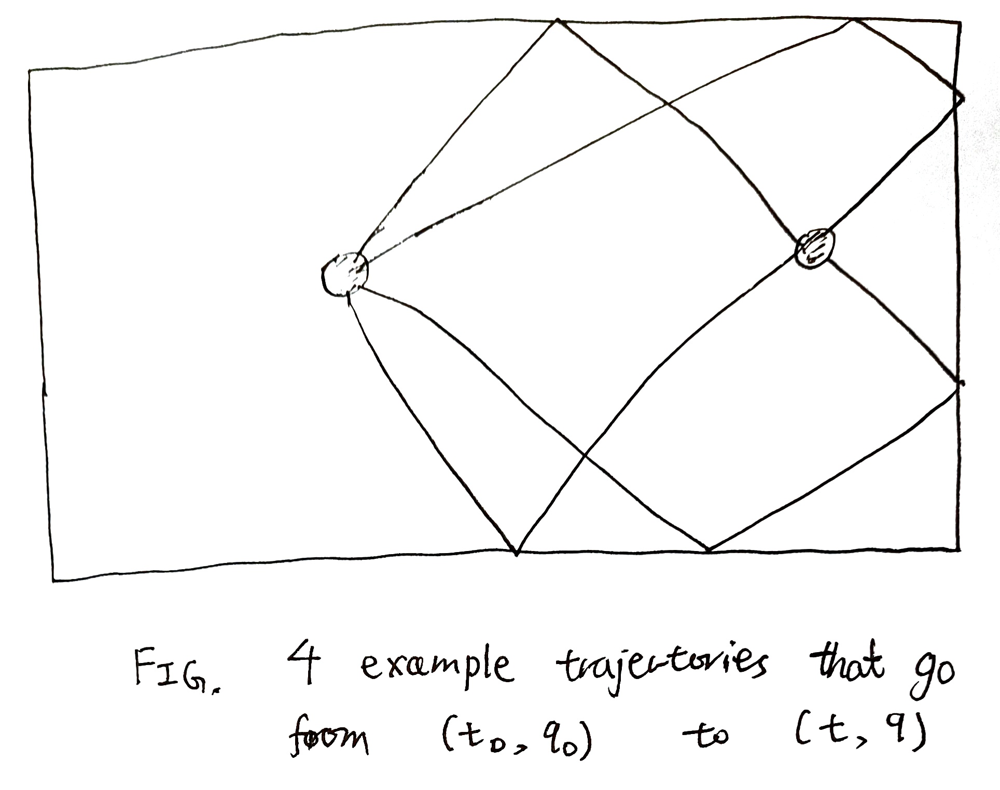
Hamilton’s principal function
Consider a problem in traveling: Given a starting spacetime \((t_0, q_0)\) and an ending spacetime \((t, q)\), what is the lowest cost of traveling between them? We want to define it as:
\[ S(t, q; t_0, q_0) = \int_{t_0}^t L(\tau, \gamma(\tau), \dot\gamma(\tau))d\tau \]
where \(\gamma(\tau)\) is the unique path from \((t_0, q_0)\) to \((t, q)\). However, as we saw in the case of circular billiards, we don’t have a unique path in general. Therefore, we should be a bit more careful.
First, we select a prototypical path \(\gamma_{prototype}\). Next, we smoothly vary \(\gamma_{prototype}\) until it becomes some path \(\gamma\) that goes from \((t_0, q_0)\) to \((t, q)\). Finally, define the Hamilton’s principal function using this particular \(\gamma\). The construction is a bit awkward, but it would allow us to avoid the non-uniqueness problem.
Thus, we define the Hamilton’s principal function:
\[ S(t, q; t_0, q_0) = \int_{t_0}^t L(\tau, \gamma(\tau), \dot\gamma(\tau))d\tau \tag{1}\]
Hamilton–Jacobi equation
For all nice enough Lagrangian \(L\), Hamilton’s principal function \(S\) is differentiable with respect to \((t, q)\), so we will study its differential equation.
Let’s first consider the easy case: we simply let the trajectory “run a little longer”. That is, we let the trajectory run from \((t_0, q_0)\) to \((t, q)\), then let it keep running for \(\delta t\), reaching \((t+\delta t, q + \delta q)\). It’s clear that we have \(\delta q = \dot q(t) \delta t\), and
\[ S(t+\delta t, q + \delta q; t_0, q_0) - S(t, q; t_0, q_0) = \left(\sum_i p_i \dot q_i - H\right)\delta t \]
so we have:
\[ \partial_t S + \sum_i \partial_{q_i}S \dot q_i = - H + \sum_i p_i \dot q_i \tag{2}\]
which strongly suggests
Theorem 6 \[ (-\partial_t, \nabla_q)S(t, q; t_0, q_0) = (H, p), \quad (-\partial_{t_0}, \nabla_{q_0})S(t, q; t_0, q_0) = (H_0, p_0) \tag{3}\]
If Equation 3 is indeed true, then we have
Theorem 7 (Hamilton–Jacobi equation) \[\partial_t S + H(t, q, \nabla_q S) = 0\]
It suffices to prove \(\nabla_q S = p\), since then \(\partial_t S = -H\) follows from Equation 2.
It suffices to prove \((-\partial_t, \nabla_q)S(t, q; t_0, q_0) = (H, p)\), since the other one is proved by the same argument, time-reversed.
Recall the economic construction of \(p\). It is a price vector designed specifically to destroy all arbitrage opportunities. Consequently, we can consider an entire family of paths shown in Figure (a, b).
Here, \(\gamma\) is the path from \((t_0, q_0)\) to \((t, q)\), and \(\gamma + \delta \gamma\) is the path to \((t, q+\delta q)\). We interpolate between them by a family of paths \(\{\gamma_\tau\}_{\tau}\), where \(\gamma_\tau\) is the path obtained by first moving on \(\gamma\) for time \(t\in [t_0, \tau]\), then making a “jump” by “purchasing from the market”6 an infinitesimal bundle of commodities so that we fall onto the \(\gamma + \delta \gamma\) path, then continue along that path.
6 We are using the market for real now, so the marketeer had better had stocked up on those commodities!
7 More precisely, a higher-order infinitesimal than the area of the parallelogram. See Tip 1.
Now consider two such jumped-paths, \(\gamma_{\tau}\) and \(\gamma_{\tau + \delta \tau}\), where \(\delta \tau\) is an infinitesimal, shown in Figure (c). The cost difference between them is that between two sides of the parallelogram. By the no-arbitrage construction, the difference is zero.7
Thus, we can smoothly “glide”8 the path \(\gamma\) to \(\gamma + \delta\gamma\) by the family of jumped-paths \(\gamma_\tau\), with \(\tau\) going from \(t\) to \(t_0\), with no change in cost.9 Thus, the only cost difference between \(\gamma\) and \(\gamma + \delta\) is the cost it takes to buy the bundle of commodities \(\delta q\) at the very last instance:
8 In the jargon of topology, this is a homotopy of paths.
9 More precisely, their difference in cost is a higher-order infinitesimal than the area of the curvy triangle between them. Since the curvy triangle is an infinitesimal of order \(\delta q\), the difference in cost is a higher-order infinitesimal than \(\delta q\).
\[S(t, q+\delta q; t_0, q_0) - S(t, q; t_0, q_0) = \sum_i p_i \delta q_i\]
finishing the proof.
The HJE has a standard proof, such as the one appearing in (Goldstein, Poole, and Safko 2008, chap. 8). It does not require reasoning with different orders of infinitesimals, but it is less geometrical.
Sketch of the proof:
- Start with the original system with configuration space \((t, q_{1:N}, \dot q_{1:N})\).
- Move to the Hamiltonian equations on phase space \((t, q_{1:N}, p_{1:N})\).
- Regard that as part of a larger system with configuration space \((t, q_{1:N}, p_{1:N}, \dot q_{1:N}, \dot q_{1:N}))\)
- Write down the Euler–Lagrange equations for that larger system.
Theorem 8 (Poincaré–Cartan integral invariant (Arnol’d 2001, 237–38)) Draw an arbitrary closed cycle \(\alpha\) in phase space-time. Let every point \(A \in \alpha\) evolve for some time (not necessarily the same amount of time) to reach some other point \(A'\). Let \(\alpha'\) be the cycle consisting of those points \(A'\). Then we have the Poincaré–Cartan integral invariant
\[ \oint_\alpha \left\langle p, dq\right\rangle - Hdt = \oint_{\alpha'} \left\langle p, dq\right\rangle - Hdt \]
As a special case, if both \(\alpha\) and \(\alpha'\) consists of simultaneous points, then it reduces to the Poincaré relative integral invariant
\[ \oint_\alpha \left\langle p, dq\right\rangle = \oint_{\alpha'} \left\langle p, dq\right\rangle \]
Divide the tube into ribbons, like a barrel, then note that the integral around each barrel-plank is zero, as argued before. This is a case of the Stokes’ theorem.
In more detail, we can consider the four ends of a barrel-plank parallelogram. Label those points as \(A, B, A', B'\) as shown. Though the points \(A, B, A', B'\) exist in phase space-point, we can forget their momenta, thus projecting them to configuration space-time. Each phase space-time trajectory projects to a trajectory in configuration space-time, and we obtain \(S_{A \to B} = S(t_A, q_A; t_B, q_B)\), etc.
Now, by Equation 3, we can shift \(S_{A \to B}\) to \(S_{A \to B'}\), then to \(S_{A' \to B'}\):
\[ S_{A \to B} = S_{A \to B'} -H_B \delta t_B + \left\langle p_B , \delta q_B\right\rangle = S_{A' \to B'} + H_A \delta t_A - \left\langle p_A , \delta q_A\right\rangle -H_B \delta t_B + \left\langle p_B , \delta q_B\right\rangle \]
Now, if we shift around one entire cycle, we would get back the same \(S_{A \to B}\). Thus the two integrals are equal.
We will prove Noether’s theorem similarly.
Exercise 2 A one-dimensional family of trajectories in phase space sweep out a curved surface. As shown in the illustration, prove that for any cycle \(\gamma\) on the curved surface, \(\oint_\gamma \left\langle p, dq\right\rangle = 0\).
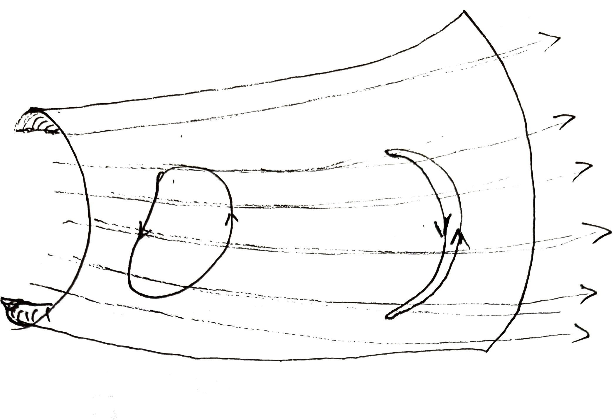
Hamilton characteristic function
In most situations, the system is time-independent. In this case we can simplify the HJE to
\[\partial_t S = -H(q, \nabla_q S)\]
Since the left side depends on \(t\), but the right side does not explicitly, we can solve this by separation of variables.
Suppose there exists some function \(W\), called the Hamilton characteristic function, that satisfies
\[ H(q, \nabla_q W(q)) = E \tag{4}\]
for some \(E\in \mathbb{R}\), then \(S(t, q) = W(q) - Et\) is a solution to the HJE.
We might naively think, by analogy with Fourier transform, that any solution to the HJE is a linear combination, of the form \(S(t, q) = \int (W_E(q) - Et)dE\), but this is not true, since the HJE is nonlinear. Nevertheless, solutions of the form \(S(t, q) = W(q) - Et\) are often sufficient for applications.
Two more proofs of HJE
We only need to prove \(p = \nabla S\), which is sufficient to prove Equation 3, and thus the HJE.
Given a starting position \((t_0, q_0)\) and a reference trajectory, there exists some \(S(t, q; t_0, q_0)\), the cost function of arriving at any point in configuration space-time in a neighborhood of the reference trajectory. For each trajectory \(\gamma\) in the neighborhood that arrives at \((t, q)\), there exists a final market price \(q(t)\). We need to show that \(q = \nabla S\).
Suppose not, then we can perform positional arbitrage. First, we arrive at \(q + \delta q\) by the efficient route, then sell off some \(\delta q\). This would cost us
\[S(t, q+\delta q; t_0, q_0) - \left\langle p, \delta q\right\rangle = S(t, q; t_0, q_0) + \left\langle\nabla S - p, \delta q\right\rangle\]
If \(\nabla S \neq p\), then we can take \(\delta q = -(\nabla S - p)\epsilon\), and thus magically make the journey cost less by a first-order infinitesimal. This means the market is inefficient, a contradiction.
Here is a proof in the spirit of wave mechanics and dynamical programming. Though I did not study his proof,10 I believe this is how the inventor of dynamical programming, Richard Bellman, proved his extension, the Hamilton–Jacobi–Bellman equation. The HJBE reduces to the HJE under certain conditions – they do not talk about the same thing, because while HJ is about stationary action, HJB is about maximal action.
10 In his autobiography, he said,
Problems of this type had been worked on before by many mathematicians, Euler, Hamilton, and Steiner, but the systematic study of problems of this type was done at RAND starting in 1948 under the inspiration of von Neumann. (Bellman 1984, 208)
… one can use dynamic programming for the minimum principles of mathematical physics. For example, with dynamic programming one has a very simple derivation of the eikonal equation. In addition, the Hamilton-Jacobi equation of mechanics can easily be derived. (Bellman 1984, 289)
Suppose that we have found all points at which the action is equal to \(S\). Now we would like to expand that surface a little further, to the surface of action \(S + \delta S\). We do that in the spirit of economics (of course!) and traveling.
Interpret the action of a path as the cost of traveling along that path. The surfaces of constant action, then, become the isochrone maps. The problem we face is then a matter of travel planning: Given that we can reach up to surface \(X_S\) if we are willing to pay cost \(S\), how much further can we travel if we are willing to pay an additional \(\delta S\)?
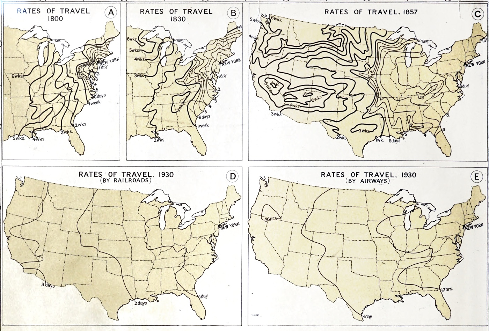
Let us stand at a point \((t, q)\) on the surface of action \(S\), and consider all the points we can reach by an additional action \(\delta S\). Suppose we go from \((t, q)\) to \((t + \epsilon t, q + \epsilon q)\), then the cost of that is \(L\left(t, q, \frac{\epsilon q}{\epsilon q}\right)\epsilon t\). (We write \(\epsilon t\) instead of \(\delta t\), because we have to use that symbol later.)
Therefore, the “wave” of action \(\delta S\) coming out of the point \((t, q)\) are those points \((t + \epsilon t, q + \epsilon q)\) satisfying the equation
\[ L\left(t, q, \frac{\epsilon q}{\epsilon q}\right)\epsilon t = \delta S \]
And the surface of action \(S + \delta S\) is the envelope of all those little waves (“wavelets”). This is the wave perspective, but we still need to return to the particle perspective.
Suppose you are already at \((t, q)\), and you just want to reach the surface of \(S + \delta S\). It doesn’t matter where you end up on that surface – you just have to get to that surface somewhere. You also have exactly \(\delta S\) to spend, so you have to plan optimally. Now, looking at that picture, you see that the only place you can possibly reach is a certain point \((t + \delta t, q + \delta q)\) where the wavelet is tangent to the surface of \(S + \delta S\). At that point, the tangent surfaces of \(S\) at \((t, q)\) is parallel to the tangent surface of wavelet. That is,
\[ \begin{aligned} d\left(L\left(t, q,-\frac{\epsilon q}{\epsilon t}\right) \epsilon t\right) |_{\epsilon t = \delta t, \epsilon q = \delta q} &= \left\langle(\left(\nabla_q L\right) \underbrace{\delta t}_{\rightarrow 0}+\nabla_v L), d q\right\rangle +\left(L-\frac{\delta q}{\delta t} \nabla_v L\right) d t \\ &\propto dS \end{aligned} \]
Thus, there exists some constant \(c > 0\) such that
\[ (\partial_t S, \nabla_q S) = c \left(\left\langle\nabla_v L, \frac{\delta q}{\delta t}\right\rangle - L , \nabla_v L\right) = (-cH, cp) \]
Since we also have
\[ \partial_t S \delta t + \left\langle\nabla_q S, \delta q\right\rangle = \delta S = L \delta t \]
we see \(c=1\).
If the wavelet is convex, then the tangent point is unique, and there is only one way to proceed from \((t, q)\). However, if the wavelet is not, then there could exist two or more particle paths shooting out from \((t, q)\). It is similar to birefringence and conical refraction (Lunney and Weaire 2006).
Exercise 3 If you have studied, or intend to study, control theory, then prove the Hamilton–Jacobi–Bellman equation using the exact same picture. You can also prove the stochastic HJB equation in the same way, though you would need to insert the expectation \(\mathbb{E}\) somewhere.
Bonus: Noether’s theorem
In Noether’s theorem, symmetries of the Lagrangian give us conserved quantities of motion.
- \(\epsilon\) is an infinitesimal number.
- An infinitesimal transform is an infinitesimal deformation \((\delta t, \delta q)\) of configuration space-time.
- \(\delta t = \epsilon T\), where \(T\) a function of type \(\underbrace{\mathbb{R}}_{\text{time}} \times \underbrace{\mathcal C}_{\text{configuration space}} \to \mathbb{R}\)
- \(\delta q = \epsilon Q\), where \(Q\) is a function of type \(\mathbb{R}\times \mathcal C \to \mathbb{R}^d\), where \(d\) is the dimension of configuration space \(\mathcal C\).
- An infinitesimal transform is a symmetry of the Lagrangian, iff taking any path \(\gamma\) (not necessarily physically real), and deforming it to \(\gamma'\), the action is conserved: \(\int_\gamma L dt = \int_{\gamma'} L dt\).
- A conserved quantity of motion is a number depending on \(t, q, \dot q\), such that it is constant along any physically real path \(\gamma\).
Exercise 4 We defined “symmetry of the Lagrangian” by a condition on an integral: \(\int_\gamma L dt = \int_{\gamma'} L dt\). Reformulate this to a condition at a point, involving \(L, Q, T\) and their derivatives.
A symmetry of the Lagrangian conserves all actions, even those of unphysical paths, but a conserved quantity of motion is only conserved along physical paths. We may call them “conserved quantity of physical motion” to emphasize the distinction.
Take a trajectory \(\gamma_{AA'}\) from point \(A\) to \(A'\). Now, shift it by \(\delta t, \delta q\), resulting in a trajectory \(\gamma_{BB'}\) from point \(B\) to \(B'\). Since \(L\) is invariant under symmetry, any such shifting gives us \(S_{AA'} = S_{BB'}\). Now, if \(\delta S \neq 0\) in a neighborhood of the given trajectory \(\gamma_{AA'}\), then we can take this variation \(\delta \gamma\), and shift it by the symmetry, showing that \(\delta S \neq 0\) in a neighborhood of \(\gamma_{BB'}\) too.
Therefore, by Hamilton’s principle, the infinitesimal transform sends any physically real trajectory into another physically real trajectory.
Theorem 9 (Noether’s theorem) If \((t, q) \mapsto (t + \epsilon T, q + \epsilon Q)\) is an infinitesimal symmetry of the Lagrangian, then
\[ H T - \left\langle p, \delta Q\right\rangle = (\left\langle\nabla_v L, \dot q\right\rangle - L)T - \left\langle\nabla_v L, Q\right\rangle \]
is a conserved quantity of motion.
Technically speaking, we should not confuse the left side and the right side of
\[ H T - \left\langle p, \delta Q\right\rangle = (\left\langle\nabla_v L, \dot q\right\rangle - L)T - \left\langle\nabla_v L, Q\right\rangle \]
The left side is defined on the phase space-time, while the right side is defined on the configuration space-time. They are equal only because we have soldered together the phase space and the configuration space.
Indeed, again and again we see that Lagrangian and Hamiltonian mechanics are different worlds, with their own dreams and phantasies, but always agreeing on the same reality.
If this were the case, then why do we bother creating two mechanics, since there is no physical experiment to distinguish them? It is because in quantum mechanics, virtual trajectories are just as real as the “real” trajectories. A particle can just go around the earth once before it arrives at its destination, taking the long way around. In this case, what is virtually possible matters just as much as what is classically real, and if Lagrangian mechanics and Hamiltonian mechanics can entertain different kinds of dreams, we might be able to tell them apart.
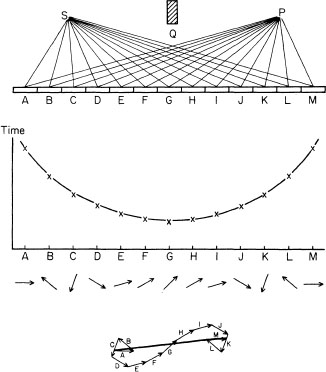
Given any physically real trajectory \(\gamma_{AA'}\) from point \(A\) to \(A'\), the infinitesimal transform sends it to another physically real \(\gamma_{BB'}\). By symmetry, both paths have the same action. Thus, we have
\[ S(A, A') = S(B, B') \]
Now, consider an intermediate path \(\gamma_{A, B'}\). By Equation 3,
\[ S(A, B') = S(A, A') - H \delta t + \left\langle p, \delta q\right\rangle, \quad S(B, B') = S(A, B') + H_0 \delta t_0 - \left\langle p_0, \delta q_0\right\rangle \]
Therefore, \(H T - \left\langle p, \delta Q\right\rangle\) is a conserved quantity of motion.
The proof is similar to the proof of Theorem 8, though they differ in that Noether’s theorem shows a quantity, defined at a single point, is conserved over a trajectory, while the Poincaré–Cartan invariant is not defined at a single point, but as an integral over an entire cycle.

Hamiltonian optics
Isotropic case
We are going back to the roots, as geometric optics was what inspired Hamilton to develop his theory of Hamiltonian mechanics.
When Hamilton developed his Hamiltonian approach, it was to study geometric optics, which can be derived from Fermat’s principle: light paths have stationary travel time. In other words, the action of a path is
\[S(\text{path}) = \int_{\text{path}} dt\]
Thus, \(L = 1\)...? Well, here we see the problem: in geometric optics, if you fix the starting and ending point as \((t_0, q_0), (t, q)\), then any path between them takes exactly \(t-t_0\) time, and there is nothing to vary. Consequently, we need to remove time from consideration, so that there is something to vary.
Fermat’s principle, reformulated, states light paths have stationary optical length. Let the medium be isotropic (light speed does not depend on direction), then we have
\[S(\text{path}) = \int_{\text{path}} n(q) \|dq\|\]
where \(n\) is the refractive index, with \(L(q) = n(q)\). Here we encounter a brief difficulty: time flows in one direction only, but space flows in infinitely many possible directions!
The solution might seem like a joke, but it would work out well: select one direction11, say \(q_0\), and pretend that it is time. With this trick, all previous mathematical formalism immediately applies, and we have
11 This direction is usually selected to be the direction of the principal optic axis. For example, the long-axis of a camera is a principal optic axis, and so is the barrel-axis of a telescope.
\[S(\text{path}) = \int_{\text{path}} n(q_0, q_1, q_2) \sqrt{1 + \left(\frac{dq_1}{dq_0}\right)^2 + \left(\frac{dq_2}{dq_0}\right)^2}dq_0\]
Derivation
Let’s make the notation cleaner, by rewriting \(q_0\) as \(t\), \((q_1, q_2)\) as \(q\), and using \(v\) to mean \(\left(\frac{dq_1}{dq_0}, \frac{dq_2}{dq_0}\right)\). Then we have
\[L(t, q, v) = n(t, q) \sqrt{1 + \|v\|^2}\]
Routine calculation yields
\[\begin{cases} L(t, q, v) = n(t, q) \sqrt{1 + \|v\|^2}\\ H(t, q, p) = -\sqrt{n^2 - \|p\|^2} \end{cases} \quad \begin{cases} p^\ast = \frac{nv}{\sqrt{1 + \|v\|^2}} \\ v^\ast = \frac{p}{\sqrt{n^2 - \|p\|^2}} \end{cases}\]
we continue with the HJE, which simplifies to:
\[(\partial_t S)^2 + \|\nabla_q S\|^2 = n^2\]
Reverting notation back to \((q_0, q_1, q_2)\), we find the eikonal equation12:
12 From Greek εἰκών (eikon, “image”), from which the word “icon” derived.
\[\|\nabla_q S\| = n(q)\]
Why did the trick work? Well, if we look back to how we derived the Hamiltonian, we could see that what we called “time” is really just a special copy of \(\mathbb{R}\), along which we organized all other state and control variables. We don’t really need time to be anything more than the domain of functions, as in \(q_i: \mathbb{R}\to \mathbb{R}\) and \(v_i : \mathbb{R}\to \mathbb{R}\). It most definitely does not need to “flow”, or flow only from the past to the future, or have any psychological significance.
Interpretation
Starting with Fermat’s principle for light rays, we ended up with the eikonal equation for light waves. In general, we find the following duality between wave-field optics and particle-path optics.
| perspective | particle-path | wave-field |
|---|---|---|
| action \(S\) | a function of particle path | a field on configuration-spacetime |
| equation | \(\|\nabla_q S\| = n(q)\) | \(\partial_t S + H(t, q, \nabla_q S) = 0\) |
| in optics | light rays, Fermat’s principle | light waves, Huygens principle |
| in mechanics | point particles | matter waves |
Anisotropic case
When the travel cost of light can depend on the direction of travel, we say that the medium is anisotropic. Now, you might expect
\[ S = \int n(\hat{\delta q}) \delta q \]
but this is incorrect, not because there is anything necessarily wrong with the formalism, but because of how \(n\) is defined by convention in anisotropic material. At this point, we must study the full particle-wave duality again.
For a moment, let’s pretend light is really a particle, and consider how it might appear to someone who believes light is a wave. We arrange an entire plane of photons, such that the plane is perpendicular to a unit vector \(\hat k\). Now, let them move optimally for time \(\delta\). Each of them would go in the same optimal direction \(v^*(\hat k)\), to push the wavefront as far-out as possible.
Now, the wavefront does not move in the direction \(v^*\), but in the direction \(\hat k\). Therefore, the wavefront moves at group velocity \(v_g(\hat k) = \left\langle v^*(\hat k), \hat k\right\rangle \hat k\).
Since the photons are trying to push as far out as possible,
\[v^*(\hat k) = \mathop{\mathrm{argmax}}_{v \in K_{particle}} \left\langle\hat k, v\right\rangle\]
where we write \(K_{particle}\) as the surface of all particle velocities in all directions. It is a sphere of radius \(c\) in a vacuum, but in an anisotropic medium, we allow it to be any crazy shape.
Instead of studying the group velocity, we actually need to use its inverse – the wavevector \(k = \frac{\hat k}{v_g}\).13 We thus have
13 The typical definition is \(k_{usual} = \frac{2\pi}{\lambda}\hat k = \nabla \phi\), where \(\phi\) is the phase of the light, and \(f\) is its temporal frequency. Our definition, which makes it cleaner, but somewhat different from typical definition, is \(k_{ours} = \frac{\nabla \phi}{2\pi f} = \frac{\nabla \phi}{\omega}\).
\[k = \frac{\hat k}{\max_{v \in K_{particle} \left\langle v, \hat k\right\rangle}}\]
The reason we use this instead of the group velocity is that, a little simplification later, we have the beautifully simple relation
\[ \forall k \in K_{wave}, \quad \max_{v \in K_{particle}}\left\langle v, k\right\rangle = 1 \]
This is a suggestive symmetry, which practically demands us to write it as a duality:
\[ \begin{cases} v^*(k) = \mathop{\mathrm{argmax}}_{v \in K_{particle}}\left\langle v, k\right\rangle \\ k^*(v) = \mathop{\mathrm{argmax}}_{k \in K_{wave}}\left\langle v, k\right\rangle \end{cases}, \quad \begin{cases} \left\langle v^*(k), k\right\rangle = 1\\ \left\langle v, k^*(v)\right\rangle = 1\\ \end{cases} \]
This is the polar dual construction, often used in convex analysis.14 (Hiriart-Urruty and Lemaréchal 2001, sec. C.3).
14 What, just because we have not mentioned Legendre transform for a few pages, you would think that we’re done with convex analysis? Too bad! If nature is the great optimizer, then convex analysis is inescapable at every turn.
The best case is if \(K_{particle}\) is convex. In this case, each \(k \in K_{wave}\) defines a plane perpendicular to it, at a distance \(\|k\|^{=1}\) from the origin, and the plane is tangent to \(K_{particle}\) at precisely \(v^*(k)\), and conversely so. In other words, \(K_{particle}\) is the envelope of polar lines to points in \(K_{wave}\), and conversely so.
Conversely, we can pretend that light is really a wave, and consider how it might appear to someone who believes light is a particle. We would then go through the above argument, and obtain the same result.
However, we want to deal with more general cases than this, so we need to resolve two issues.
First issue: \(K_{particle}\) might be non-convex. Second issue: it might be double-sheeted, or even many-sheeted. For example, in crystal, light polarized in two different orientations can move at two different velocities even in the same direction. Thus, its \(K_{wave}\) has two sheets, and so its polar dual, \(K_{particle}\), also has two sheets.
Both issues are solved by extending the definition of polar duality: replace the maximum with a stationarity. We can still construct \(K_{particle}\) from \(K_{wave}\) by taking a tangent plane for each \(k \in K_{wave}\), but now instead of the intersection of the half-planes, we use their envelope. A picture shows what we mean:
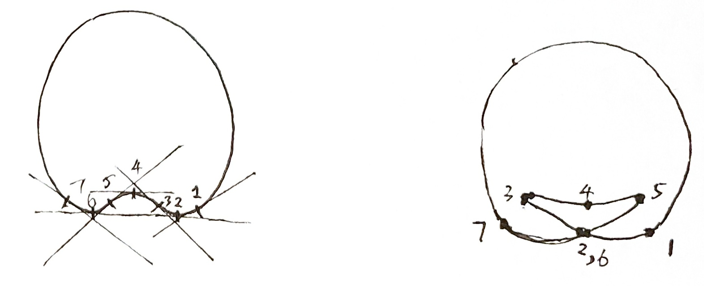
We still have a duality between points on the two surfaces, defined by stationarity, not optimality. For example, for any wavevector \(k \in K_{wave}\), its corresponding dual point \(v^*(k)\) satisfies \(\left\langle v^*(k) + \delta v, k\right\rangle = 0\) for any \(\delta v\) in the tangent space of \(K_{particle}\) at \(v^*(k)\).
The first application of Hamiltonian mechanics was done by Hamilton, who in 1832 predicted theoretically that if light enters a biaxial crystal in just the right way, it will not just refract in one direction, but in an entire cone of directions – which he termed internal conical refraction. The theory of this is fascinating,15 however, for lack of space, we will only give the barest description.
15 It was historically important as the first phenomenon predicted by mathematical reasoning before experimental observation (Berry and Jeffrey 2007), and it was often compared to the mathematical prediction of Neptune by Le Verrier (1845) (Smith 1989).
Simply put, it turns out that in a biaxial crystal, both \(K_{particle}\) and \(K_{wave}\) have the same shape of a large blob containing a smaller blob, touching each other at 4 cone-shaped points, as pictured.
Now, let \(k_c \in K_{wave}\) be one of the cone-shaped points, then it corresponds to a tangent plane to \(K_{particle}\). Each tangent point \(v \in K_{particle}\), conversely, corresponds to a tangent plane to \(k_c\).
Since \(k_c\) is a conical point, however, there are a whole circle of tangent planes to \(K_{wave}\) at \(k_c\). Consequently, the tangent plane to \(K_{particle}\) is tangent to it on one entire circle. It is as if we throw a tire on the floor – it will touch the floor not just at three points, but an entire circle of points. Now, suppose that we have a planar wave moving in the direction of \(k_c\) inside the crystal, then each light-particle would have to move in a direction \(\mathop{\mathrm{argmax}}_{v \in K_{particle}}\left\langle v, k_c\right\rangle\). But since there is an entire circle of such directions, we would have an entire circle of possible \(v\), and thus, we obtain a hollow cone of light.
The particle-wave duality
Particle in free space
Consider a particle of mass \(m\) in free space \(\mathbb{R}^n\). Its Lagrangian is \(L(t, q, v) = \frac 12 m\|v\|^2\). By convex duality, we have
\[\begin{cases} L(t, q, v) = \frac 12 m\|v\|^2\\ H(t, q, p) = \frac{\|p\|^2}{2m} \end{cases}\quad \begin{cases} p^\ast(t, q, v) = mv\\ v^\ast(t, q, p) = \frac{p}{m} \end{cases}\]
For any \(t_0, q_0, t, q\) with \(t_0\neq t\), we can directly solve for the trajectory from \((t_0, q_0)\) to \((t, q)\), then find the action:
\[S_{t_0, q_0}(t, q) = \frac 12 m \frac{\|q-q_0\|^2}{t-t_0}\]
Each \(S\) defines a paraboloid wavefront in spacetime, with apex \(t_0, q_0\). The wavefront is translation-symmetric, so we set both to zero, yielding the equation of the wavefront:
\[ t = \frac{\|q\|^2}{2S/m} \]
The wavefront of \(S = 0\) is just the positive \(t\)-axis, and as \(S\) increases, the wavefront widens out.
Now, we interpret this wave from the HJE point of view. Let’s say we have the wavefront at \(S=S_0\), and we want to construct the wavefront at \(S = S_0 + \delta S\). This we perform by rippling out a little wavelet at each point \((t', q')\) on the wavefront. The little wavelet has shape \((t-t') = \frac{\|q - q'\|^2}{2\delta S/m}\), and as we move \(t', q'\) around the parabola of wavefront \(S = S_0\), the envelope of these wavelets is the wavefront of \(S = S_0 + \delta S\).
This is the wave point of view. We can switch back to the particle point of view. What is the velocity of the particle passing the point \((t', q')\)? We know that it must be traveling in the optimal direction, and the optimal direction allows it to go as far as possible. Therefore, we simply draw the wavelet of \(\delta S\) at \((t', q')\), then find the intersection of the wavelet with the wavefront of \(S = S_0 + \delta S\).
The entire procedure is pictured below.
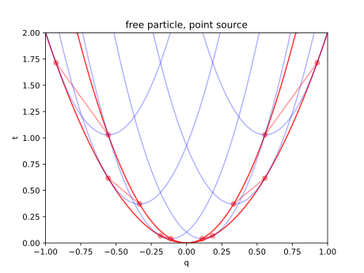
Particle-wave in free space
The paraboloid-shaped solution for \(S\) is interpretable in Newtonian mechanics, as the motion of a single particle moving from the origin. However, the HJE itself is merely a PDE with its own logic and meaning, and consequently, it may have different solutions that are hard to to interpret in Newtonian mechanics.
From our 21st-century perspective, we can say that the HJE is generally true, and Newtonian mechanics is only a special case. Some solutions to the HJE may not be interpretable in Newtonian mechanics, but they are nevertheless physically real, since Newtonian mechanics is incomplete. Given that, we simply try to solve HJE, then try to interpret it, even if not in Newtonian mechanics.
Because the Lagrangian is time-independent, so any time-independent solution:
\[S(t, q) = W(q) - Et, \quad \| \nabla_q W \| = \sqrt{2mE}\]
for any constant \(E > 0\) also gives a solution to the HJE. This is just the eikonal equation for a medium of constant wave speed! More on this in the section on geometric optics. One can of course solve the eikonal equation by putting it into a numerical package and let it grind out the solution. However, we can interpret it by the Huygens principle.
Suppose you know a surface of constant \(W = W_0\), and you know that the arrows of \(\nabla_q W\) point outwards, then since \(\nabla W\) is perpendicular to the surface, and is of constant length \(\sqrt{2mE}\), you can step out a small distance \(ds\) perpendicularly out of the whole surface \(W= W_0\), and arrive at the surface of \(W=W_0 + \sqrt{2mE} ds\). Alternatively, you can draw small spheres of radius \(ds\), and their outwards envelope is the \(W=W_0+ \sqrt{2mE} ds\) surface. These procedures are equivalent, but in one, we constructed “rays” while the other we constructed “wave fronts”.
For the free particle, the simplest solution is the plane wave:
\[W(q) = \sqrt{2mE} \langle \hat k, q \rangle\]
where \(\hat k\) is any unit-vector, interpreted as the direction of wave propagation. Plugging it back to Equation 3, we find that the “planar wave particle” has
\[(\partial_t S, \nabla S) = (-H, p) = (-E, \sqrt{2mE}\hat k)\]
where \(\hat k\) is the direction of the group velocity of the wave. The group velocity of the wave is \(\frac{\partial_t S}{\nabla S} = \frac{E}{\sqrt{2mE}}\hat k\).
Taking the particle-wave analogy seriously, we say that:
- a planar wave is a particle with energy \(E\) and momentum \(p \propto k \propto \sqrt{2mE} \hat k\).
- a particle with energy \(E\) and momentum \(p\) is a planar wave traveling at group velocity \(E/p\).
Typically, waves have a wavelength \(\lambda\), which is related to the wave vector \(k\) by \(k \propto \lambda^{-1}\), we find that the particle has wavelength \(\lambda \propto \frac 1k \propto \frac 1p\). Thus, we arrived at de Broglie’s matter-wave hypothesis, which Schrödinger expanded into his equation. Both de Broglie and Schrödinger were inspired by Hamilton’s optics-mechanics analogy, so we are treading the same path as them a century ago.
In fact, we could start with an arbitrary wavefront in configuration-spacetime, and use Huygens’ principle to construct the wavefront in the next moment. In general, we can’t do Fourier analysis on such wavefronts – they are not decomposable into planar waves, because the HJE is a nonlinear equation. Fourier analysis only works on linear differential equations.
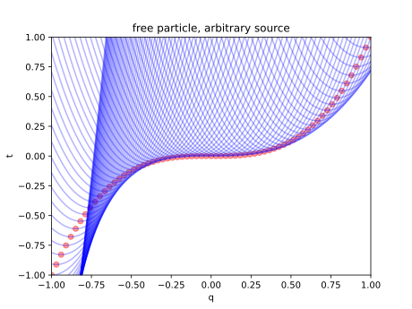
Particle in a potential field
A particle in a time-dependent potential field \(V\) has Lagrangian \(L(t, q, v) = \frac 12 m\|v\|^2 - V(t, q)\). By convex duality
\[\begin{cases} L(t, q, v) = \frac 12 m\|v\|^2 - V(t, q)\\ H(t, q, p) = \frac{\|p\|^2}{2m} + V(t, q) \end{cases} \quad \begin{cases} p^\ast = mv \\ v^\ast = \frac pm \end{cases}\]
The HJE gives
\[\partial_t S + \frac 1{2m} \|\nabla_q S\|^2 = -V(t, q)\]
As before, if we interpret the equation as a wave equation, then the group velocity is \(\frac{\partial_t S}{\nabla S} = \frac{-E}{p} \hat k\), with magnitude \(v_g = \frac{E}{\sqrt{2m(E-V)}}\).
We consider the classical problem of a body in free fall, thrown from the origin \((t, q) = (0, 0)\). Basic physics tells us that the position and velocity of the body are given by
\[q(t) = v_0 t - \frac{1}{2}gt^2, \quad v = v_0 - gt = \frac{q}{t} - \frac{1}{2}gt\]
Plugging these expressions into the Hamilton-Jacobi equation, we obtain a system of partial differential equations for the action function \(S\):
\[ \begin{cases} \partial_t S &= -H = -\frac{1}{2}m(\frac{q}{t} - \frac{gt}{2})^2 - mgq \\ \partial_q S &= m(\frac{q}{t} - gt) \end{cases} \]
Solving this system, we find the unique solution for the action:
\[S = \frac{x^2}{y} - xy - \frac{y^3}{12}\]
where we have introduced convenience variables \(x = gq\), \(y = gt\), and \(s = \frac{2gS}{m}\).
The contour lines of the action function satisfy the equation:
\[ x = \frac{1}{2}y^2 \pm \sqrt{\frac{1}{3}y^4 + sy} \]
To analyze the wavelet associated with this system, we start by writing down the Lagrangian:
\[L = T - V = \frac{1}{2}m(\frac{\delta q}{\delta t})^2 - mgq\]
The wavelet equation is then given by:
\[\delta S = L \delta t = \left(\frac{1}{2}m(\frac{\delta q}{\delta t})^2 - mgq\right)\delta t\]
Simplifying this equation using our convenience variables, we get:
\[(\delta x)^2 = 2x(\delta y)^2 + \delta s \delta y\]
Solving for \(\delta y\), we obtain:
\[\delta y = \frac{-\delta s \pm \sqrt{(\delta s)^2 + 8x(\delta x)^2}}{4x}\]
This equation reveals the nature of the wavelet. When \(x > 0\), the equation describes a hyperbola. For \(x < 0\), it describes an ellipse. At the boundary \(x = 0\), the equation describes a parabola.
There is no planar wave solution, because a planar wave solution is both constant energy and unbounded, whereas if a particle can move infinitely far away, it must have infinite energy. If we attempt to force a planar wave solution, it would immediately break down:
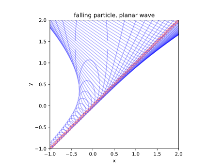
Exercise 5 Solve the time-independent HJE for the particle in free fall. It should be \(S = W(q) - Et\), where \(E\) is a constant, and \(W\) is a semicubical parabola.
Exercise 6 In the same way, analyze the simple harmonic oscillator – a particle in a potential well \(V = \frac 12 kq^2\). Similarly, it cannot have a planar wave solution. Plot the wavelets along each point on a planar wave, and see how it breaks down. Find two families of solutions: The case where we have a point source at \((0, 0)\), and the case of time-independent HJE.
Deriving the time-independent Schrödinger equation
This section based on (Masoliver and Ros 2009; Derbes 1996; Hamill 2013, sec. 6.4).
Assume that the potential is time-independent: \(V(t, q) = V(q)\). Assume that the physical system can be described by a function
\[ \Psi(t, q) = \Psi_0(r) e^{iS(t, q)/\hbar} \]
where the function \(\Psi\) is typically called the “wave function”.16 We assume that the wave is a “standing wave”, so that all of space is oscillating in sync. Let \(S(t, q) = W(q) - Et\), so that the oscillation frequency is \(E/\hbar\).17
16 What is a wave function? It is just some abstract mathematical object, that somehow allows us to calculate everything we want to know about this system. We have no idea what it is, but it works. The same applies to the function \(S(t, q)\). We call it the “minimal cost” for arriving at \((t, q)\), but what really is a cost in physics? Particles do not really pay their paths with natural money. All this time, we have pretended that they pay some kind of cost and want to minimize the cost, but it is really just one big analogy. The same applies for the function \(\Psi\). We might call it a “wave function”, but it really is just one big analogy with the waves on an ocean. There is really no wave in quantum mechanics, only a function that we pretend is a wave, because it helps us calculate results that happen to be correct.
17 The most important experimental result from quantum mechanics is that energy levels are quantized. Now, a quantized energy level is something like \(E = h, 2h, 3h, \dots\). There is really just one kind of thing in classical mechanics that is quantized: standing waves! If you have a string, then its standing waves must have \(0, 1, 2, 3, \dots\) nodes, i.e. quantized. Thus, it is natural to try out this “standing wave” assumption.
So, we can separate the variables to
\[ \Psi(t, q) = \underbrace{e^{-i\frac{E}{\hbar}t}}_{\text{oscillation in sync}} \underbrace{\psi(q)}_{\text{variation over space}}, \quad \psi(q) = \Psi_0(q) e^{i\frac{W(q)}{\hbar}t} \]
Since \(\Psi\) should be a wave, it has better follow the wave equations:
\[ (\partial_t^2 - v_g^2 \nabla^2)\Psi = 0 \]
where \(v_g\) is the group velocity of the wave. As we saw previously, \(v_g = \frac{E}{\sqrt{2m(E-V)}}\) for a particle in a potential. Then we have
\[ \begin{cases} \Psi(t, q) &= e^{-i\frac{E}{\hbar} t} \psi(q), \\ 0 &= (\partial_t^2 - v_g^2 \nabla^2)\Psi, \\ v_g &= \frac{E}{\sqrt{2m(E-V)}}, \end{cases}\;\; \implies \frac{\hbar^2}{2 m} \nabla^2 \psi+(E-V) \psi = 0, \]
which is the time-independent Schrödinger equation.
Exercise 7 The time-dependent Schrödinger equation states that
\[ i\hbar\frac{\partial}{\partial t} \Psi(t, q) = \left [ - \frac{\hbar^2}{2m}\nabla^2 + V(t, q)\right ] \Psi(t, q). \]
Plug \(\Psi(t, q) = \psi_0(t, q) e^{i S(t, q)/\hbar}\) back to the time-dependent Schrödinger equation, and check that at the \(\hbar \to 0\) limit, we recover the HJE for \(S(t, q)\). This is a simple example of the WKB approximation.
If the above derivation looks mildly suspect, and leaves you with a feeling of seeing a magic trick, it is not an accident. The analogy between classical mechanics and quantum mechanics is not exact, so we cannot logically derive quantum mechanics from classical mechanics. The simple problem is that classical mechanics, even when formulated in the form of Hamilton–Jacobi wave equations, cannot reproduce interference or diffractions. Consider the simple case of a straight-edge diffraction. If you aim a light beam at a sharp edge, then on the other side, there would be alternating bright and dark bands fading into the shadow. However, if light is going by the shortest path, then there should be no such banding, and the brightness should just drop off to zero monotonically.
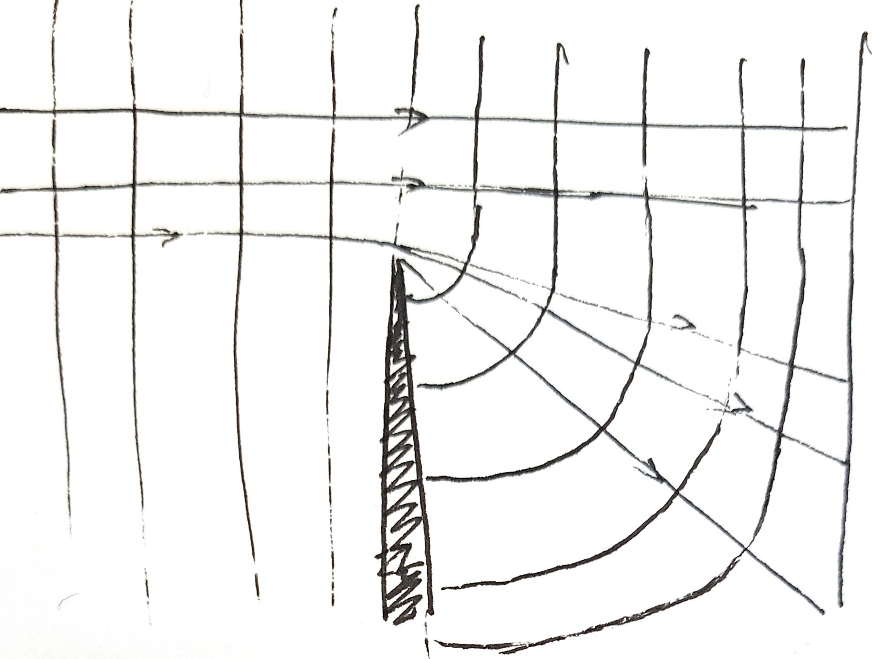
The solution is to admit that geometric optics is insufficient, that Huygens’ principle is insufficient, and we need a full theory of light wave in order to explain what happens on the smallest scales – a diffraction theory. Similarly, classical mechanics is insufficient, and the HJE is insufficient, and we need a full theory of matter wave in order to explain what happens in the atomic world – quantum mechanics.
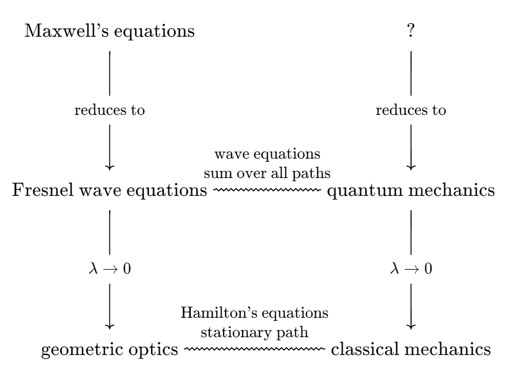
Deriving quantum mechanics from classical mechanics is necessarily fraught with danger and luck, because in going from quantum mechanics to classical mechanics, something is irrevocably lost (and other things are irrevocably earned). It is about as difficult as going from geometric optics to wave optics. Still, several people have tried and succeeded, most famously, Schrödinger.
… the conception of rays is thoroughly well defined only in pure abstract geometrical optics. It is wholly incapable of being applied to the fine structure of real optical phenomena, i.e. to the phenomena of diffraction. Even in extending geometrical optics somewhat by adding the notion of Huygens’ principle, one is not able to account for the most simple phenomena of diffraction without adding some further very strange rules concerning the circumstances under which Huygens’ envelope-surface is or is not physically significant. (I mean the construction of “Fresnel’s zones”.) These rules would be wholly incomprehensible to one versed in geometrical optics alone. Furthermore it may be observed that the notions which are fundamental to real physical optics, i.e. the wave-function itself (\(W\) is merely the phase), the equation of wave-propagation, the wave length and frequency of the waves, do not enter at all into the above stated analogy.
… geometrical optics is only an approximation… when interference and diffraction phenomena are involved, it is quite inadequate. This prompted the thought that classical mechanics is also only an approximation relative to a vaster wave mechanics. … A new mechanics must be developed which is to classical mechanics what wave optics is to geometrical optics. This new mechanics has since been developed, thanks mainly to the fine work done by Schrödinger.
Louis de Broglie’s Nobel Prize Lecture (De Broglie 1929)
Relativistic particle in free space
Since the HJE is fully general for any function \(L(t, q, v)\) that is smooth and strictly convex in \(v\), we can simply write down the Lagrangian for relativistic particle in a field, and it would just work.
Let’s first consider particle in free space. In relativity, the one thing that is coordinate-independent is the proper time of a trajectory, so it is reasonable to guess that the action is the proper time, then deduce from it the Lagrangian. This is natural if we think of \(S\) as the optimal cost of traveling.
Let \(t_0 = 0, q_0 = 0\), then by basic relativity, the proper time for the particle to arrive at \((t, q)\) is
\[S(t, q) = \frac{\|q\|}{v\gamma} = \sqrt{t^2- \frac{\|q\|^2}{c^2}}\]
where \(\gamma = \frac{1}{\sqrt{1-v^2/c^2}}\) is the well-known factor used everywhere in special relativity.
Taking \(\nabla_q\), and simplifying, we find the relativistic momentum to be...
\[p = \nabla_q S = -\frac{\gamma v}{c^2}\]
However, we were expecting \(p \to mv\) when \(v \to 0\), so we fix this issue by multiplying the action with a constant factor \(-mc^2\). Multiplying a constant factor in action has no effect on the calculus of variations, so we are free to do this. Thus we find that the action of a path is the proper time of the path multiplied by \(-mc^2\):
\[S(\text{path}) = -mc^2 \int_{\text{path}}d\tau = -mc^2 \int_{\text{path}}\frac 1\gamma dt\]
With this, we can derive the familiar equations by the HJE and convex duality:
\[\begin{cases} L(q, v) = -\frac{mc^2}{\gamma}\\ H(q, p) = \sqrt{(\|p\|c)^2 + (mc^2)^2} \end{cases} \quad \begin{cases} p^\ast = \gamma mv \\ v^\ast = \frac{pc}{\sqrt{\|p\|^2 + (mc)^2}} \end{cases}\]
In particular, at low \(v\), we have \(L \approx -mc^2 + \frac 12 m\|v\|^2\). So somehow, by combining the geometry of spacetime with analytical mechanics, we have discovered the \(E = mc^2\) formula, even though it seems like something we couldn’t have discovered from mere geometry.
The HJE then becomes
\[\frac 1{c^2} \left(\partial_t S \right)^2 - \|\nabla S \|^2 = m^2 c^2\]
In particular, the time-independent solutions are of the form
\[S = W(q)-Et, \quad \| \nabla W \| = \frac 1c \sqrt{E^2 - m^2 c^4 }\]
for any \(E > mc^2\). In particular, if we plug in the usual relativistic energy \(E = \gamma mc^2\), we get
\[\| \nabla W \| = \gamma mv\]
which is similar to what we obtained for the free particle in classical mechanics, with \(\|\nabla W \| = \sqrt{2mE}\), just with classical momentum upgraded to relativistic momentum.
Exercise 8 Just as how the HJE of a classical particle can be derived as the \(\hbar \to 0\) limit of the Schrödinger equation, one can derive the HJE of the non-quantum relativistic particle as the \(\hbar \to 0\) limit of the Klein–Gordon equation. The Klein–Gordon equation is essentially the simplest possible way to combine special relativity with Schrödinger equation:
\[\left( \frac{1}{c^2} \frac{\partial^2}{\partial t^2} - \nabla^2 + \frac{m^2 c^2}{\hbar^2} \right) \psi(t, \mathbf{x}) = 0\]
Plug in \(\psi(t, q) = \psi_0(q, t) e^{i S(t, q) / \hbar}\), and check that at \(\hbar \to 0\) limit, we recover the HJE.
Periodic motion
Oscillator on a line
Consider a simple harmonic oscillator (SHO), with Hamiltonian \(H\) in the \((q, p)\) coordinates:
\[H(t, q, p) = \frac{p^2}{2m} + \frac 12 kq^2\]
The motion of the system is simply a circular motion around \((q, p) = (0, 0)\):
\[\begin{cases} \dot q = p/m \\ \dot p = - kq \end{cases}\quad \begin{cases} (q, p) = (q_0 \cos(\omega t), -m\omega q_0 \sin(\omega t)) \\ \omega = \sqrt{k/m} \end{cases}\]
Now consider the action of an entire cycle:
\[S = \oint Ldt = \oint (pdq - Hdt)\]
The \(\oint pdq\) term is the area enclosed by the ellipse, so it is \(\pi p_0 q_0\), and the \(\oint Hdt\) term is just \(HT = \frac{2\pi}{\omega} \frac 12 kq_0^2\), since the system conserves energy. Now direct computation shows
\[\oint pdq = HT\]
In particular, since \(T\) does not depend on the energy of the oscillation, we can take derivative against energy, obtaining
\[ \frac{d}{dE}\oint_{\gamma_E} pdq = T \]
where \(\gamma_E\) is the path traced out by the oscillator with energy \(E\). We show that this is generally true for 1D oscillators.
Theorem 10 Given any 1D oscillator,
\[ \frac{d}{dE}\oint_{\gamma_E} pdq = T(E) \]
where \(\gamma_E\) is the path traced out by the oscillator when it has energy \(E\), and \(T(E)\) is the period.
Consider the phase space plot of a generic 1D oscillator. Every point in its phase space must go in a cycle, returning to the start again. Thus, its phase space is like an ugly onion: It is split into cycles, which are not generally circular in shape, and generally each cycle has a different cycling period.
Take a particular cycle as shown, starting and ending at \(q_0 = q_1\). Now consider this variation that fixes \((t_0, q_0), (t_1, q_1)\): move from point 0 to point 1, then go around the larger cycle to point 1, then return to point 0. The action of the varied cycle consists of three parts: \(0\to 1, 1 \to 1, 1 \to 0\). By (modified) Hamilton’s principle, the variation of action is zero.
Now, let \(T(E) = t_1 - t_0\) be the cycle period for the cycle with energy \(E\), then from our above argument, we have
\[\oint_E pdq - E T(E) = \oint_{E + \delta E} pdq - (E + \delta E) T(E) + O(\delta E^2)\]
where the \(O(\delta E^2)\) term deals with the \(0\to 1, 1\to 0\) parts of \(\int -Hdt\). Thus we obtain
\[\frac{d}{dE} \oint_E pdq = T(E)\]
The 1D pendulum in gravity, with length \(l\) and mass \(m\), has Lagrangian \(L = \frac 12 m(l\dot q)^2 + mgl\cos q\), momentum \(p = ml^2 \dot q\), and Hamiltonian
\[H = \frac{p^2}{2ml^2} - mgl \cos(q)\]
We know that the pendulum is not a SHO. Indeed, the cycle period \(T(E)\) strictly increases with energy \(E\) of the cycle, and it diverges as the pendulum swing approaches the highest point: \(\lim_{E \to mgl} T(E) = +\infty\).
Consider the cycle with maximum swing angle \(\theta\). The cycle encloses an oval-shaped region in phase space, with equation \(p^2 = 2m^2 gl^3(\cos q - \cos\theta)\). Consequently, we have the somewhat mysterious result:
\[\int_0^{E(\theta)} T(E) dE = 4\sqrt{2m^2 gl^3} \int_0^\theta \sqrt{\cos q - \cos\theta} dq\]
where \(E(\theta) = -mgl \cos\theta\) is the energy of the system when it has maximum swing angle \(\theta\).
When \(\theta\) is small, the integral is approximately
\[\int_0^\theta \sqrt{\frac 12 (\theta^2 - q^2)}dq = \frac{\pi\theta^2}{4\sqrt 2}\]
which does correspond to \(T(E) \approx 2\pi\sqrt{\frac lg}\), and \(\delta E = mgl(1 - \cos(\theta)) \approx \frac 12 mgl \theta^2\).
When \(\theta = \pi\), the integral can be exactly evaluated:
\[\int_0^{mgl} T(E) dE = 16\sqrt{m^2 gl^3}\]
We are unable to interpret this strange but satisfying equality.
Taking \(\partial_\theta\) under the integral sign, we get
\[T(E) = \sqrt{\frac{8l}g} \int_0^\theta \frac{dq}{\sqrt{\cos q - \cos \theta}}\]
which may be directly verified.
Action-angle variables
Now, it would be great if we could “unwind” the rotatory dynamics by a time-independent canonical transform to some \((Q, P)\), by where \(P\) is constant along the cycles, and \(Q\) is increasing. That is, we want \(P\) to be the analog of “amplitude”, and \(Q\) to be the analog of “phase angle”.
Since the transform is time-independent and canonical, the Hamiltonian \(H\) is unmodified, so \(H\) is a function of \(P\) only, not \(Q\) (since \(H\) is a conserved quantity of motion). Then, since the transform is canonical, Hamilton’s equations of motion read \(\dot Q = \partial_P H(P)\). Consequently, the Hamiltonian equations of motion would become
\[\begin{cases} P(t) = P(0) \\ Q(t) = Q(0) + H'(P) t \end{cases}\]
as simple as it could be! It remains to find such a canonical transform.
We are already mostly there: we know that \(P\) is constant along the cycles, and \(Q\) increasing along the cycles. It remains to find the right scaling, so that the transform is canonical, that is, the coordinates preserve area: \(dP \wedge dQ = dp \wedge dq\).
Define \(P = \frac{1}{2\pi} \oint pdq\). Here the \(2\pi\) factor is not essential, since we could always do a point transform, scale down \(Q\) by \(2\pi\), and scale up \(P\) by \(2\pi\). However, the factor will make many formulas look cleaner.
From the proof of Theorem 10, we know that increasing the energy of the cycle by \(\delta H\) would increase the cycle area by \(T(H)\delta H\), and the cycle area is \(2\pi P\), thus
\[\delta(2\pi P) = T(H) \delta H \implies \frac{2\pi}{T(H)} = H'(P)\]
so we find that the equations of motion are:
\[\begin{cases} P(t) = P(0) \\ Q(t) = Q(0) + 2\pi \frac{t}{T(H)} \end{cases}\]
This allows us to graphically construct the \((Q, P)\) coordinates on phase space:
- Draw the cycles in phase space.
- Select a “line of longitude” arbitrarily as \(Q = 0\) line.
- Follow the trajectory of each point on the line of longitude, and mark down a new line of longitude at equal phases-angles. So for example, if you are on the cycle of energy \(E\), you would start the ride, and after \(T(E)/3\) has passed, note down its phase-angle as \(2\pi/3\). The set of all such points at every cycle is the line of longitude with \(Q = 2\pi/3\).
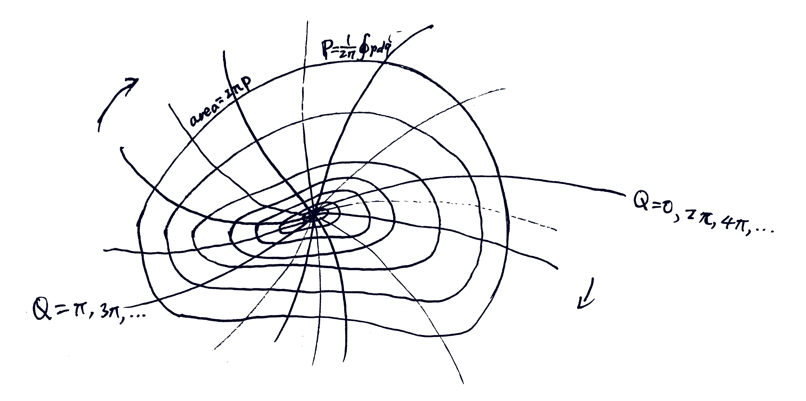
Now, we can graphically see that this construction really preserves areas:
- Take an infinitesimal parallelogram at \((Q, P)\) with sides \(\delta Q, \delta P\), such that \(\delta Q = \frac{2\pi}{N}\) for some infinite integer \(N\).
- Evolve the system in discrete steps of \(\frac{T(P)}{N}\), and follow the parallelogram along.
- Note that the parallelogram would tile the thin ring between \(P\) and \(P+ \delta P\). The thin ring has area \(\delta \oint pdq = 2\pi \delta P\), so each parallelogram has area \(2\pi \delta P/N = \delta P \delta Q\).
This is not as trivial as it seems. The “area” in phase space was defined by \(\oint pdq\), but we did not say that \(p, q\) are perpendicular in any sense. Thus, it is not obvious that \(\delta P \delta Q\) would be the area of the parallelogram. Indeed, we should not say that \(p, q\) are perpendicular, because angles do not exist and should not exist in phase space.
The entire construction of \((Q, P)\) from \((q, p)\) is often done in one divinely-inspired move by a generating function.
Adiabaticity
This section based on (Duncan and Janssen 2019, chap. 5; de Oliveira 2022).
The Lorentz pendulum is a famous example that connects the classical and the quantum world. In the early 1900s, as physicists were trying to explain various phenomena, such as the black body radiation spectrum, the atomic spectra, and such, they came to the quantum hypothesis. Consider a classical system undergoing periodic motion – such as the electrons cycling around a proton in the hydrogen atom. Whereas classically, its \(\oint pdq\) may be of any value, the quantum hypothesis states that it can only take values in
\[ \oint pdq = nh, \quad n = 1, 2, 3, \dots \]
for a certain constant of nature \(h\) – later given the name of Planck’s constant. For example, if we have a simple harmonic oscillator, then we have
\[ E\nu = n h \]
where \(\nu = 1/T\) is the frequency of the oscillator.
At the 1911 Solvay Conference, where the great physicists grappled with the new quantum phenomena,18 Einstein gave a presentation on the quantum hypothesis. At the end of the presentation, Lorentz asked a question about the pendulum. The conversation went as follows:
18 The entire conference is summarized in (Straumann 2011).
Mr. Lorentz recalls a conversation he had with Mr. Einstein some time ago, in which they discussed a simple pendulum that could be shortened by holding the string between two fingers and sliding them downwards. Suppose that initially, the pendulum has exactly one energy element corresponding to the frequency of its oscillations. It then seems that at the end of the experiment, its energy will be less than the element corresponding to the new frequency.
Mr. Einstein – If the length of the pendulum is changed infinitely slowly, the energy of the oscillation remains equal to \(h\nu\), if it was initially equal to \(h\nu\) ; it varies proportionally to the frequency. The same is true for a resistance-free oscillating electrical circuit, and also for free radiation.
Mr. Lorentz – This result is very curious and removes the difficulty. In general, the hypothesis of energy elements gives rise to interesting problems in all cases where one can change the frequency of vibrations at will.
Why is this interesting? The quantum hypothesis states that for quantum oscillators, \(E/\nu = nh\), where \(n\) can only take values in the natural numbers. The Lorentz pendulum seems to show that the quantity \(E/\nu\) can change continuously. Thus, for example, we might start at a quantized value of \(E/\nu = 100h\), and end up at \(100.5h\), invalidating the quantum hypothesis for macroscopic systems. And if macroscopic systems do not follow the quantum hypothesis, then as the macroscopic system becomes microscopic, it seems the quantum hypothesis would be invalidated as well.
Einstein replied that \(E/\nu\) of the oscillator is conserved if the length of the pendulum is changed infinitely slowly. Surprising, but it saves the quantum hypothesis.
The adiabatic theorem
Consider a pendulum with a string length \(\lambda\) that is slowly changed over time. How slow? Slow enough that the system completes many cycles before \(\lambda\) makes any appreciable change. That is,
\[\dot \lambda \ll \frac{\lambda}{T(\lambda)}\]
It is vitally important that the pulling on the pendulum is not only slow, but also “smeared”, meaning that \(\dot\lambda\) is equal over the entirety of a single oscillation. If it is not smeared, then we can break the theory. Consider for example a (spherical) child on a (frictionless) swing (in a vacuum). It is well-known that the child can, by swinging the legs in sync with the swing, get as high as possible. This is called parametric resonance.
Compared to adiabatic change, parametric resonance differs in that it is discriminating about the states. When you adiabatically pull on the string of a pendulum, your rate of pulling is the same over the entire cycle of a pendulum swing. When you resonantly pull on the string of a pendulum, your rate of pulling differs over the cycle of a pendulum swing. In the language of thermodynamics, adiabaticity means treating all microstates equally, without discrimination.
Let the angular frequency of oscillation be \(\omega = \sqrt{\frac g\lambda}\), then \(E/\omega\) is constant over time.
By basic physics, the force in the string is
\[ F = mg \cos \theta + m\dot \theta^2 / \lambda \approx mg - \underbrace{\frac 12 mg \theta^2}_{\text{$V/\lambda$}} + \underbrace{m\lambda \dot\theta^2}_{\text{$2T/\lambda$}} \]
Because the system is undergoing simple harmonic oscillation, the time-average of \(V\) and \(T\) are both \(\frac 12 E\), where \(E\) is the oscillation energy. Therefore, the time-average force is \(\bar F = mg + \frac 12 E/\lambda\).
Thus, if we shorten the string by \(\delta \lambda\), we would inject an energy of \(\delta E = \bar F (-\delta\lambda) -( mg\delta\lambda)\) (we subtract away the gravitational energy at the lowest point, as it is irrelevant). This gives us
\[ \delta E + E \delta\lambda / 2\lambda = 0 \implies E\lambda^{1/2} = \Const \]
Since the angular frequency of oscillation is \(\omega = \sqrt{\frac g\lambda}\), we have the result.
Exercise 9 Perform the same analysis on a vibrating string. The string is fixed at both ends, and the length of the string is slowly changed. The string is in a standing wave pattern, and the length of the string is changed so slowly that the string completes many cycles before the length changes appreciably. What is the adiabatic invariant in this case? The answer is in (Rayleigh 1902).
The adiabatic invariance is actually much stronger than what we have shown. It is not just that the enclosed action \(I\) is conserved up to \(O(\dot\lambda)\), but that it is conserved to all orders in \(O(\dot \lambda^n)\) (Lenard 1959). Under stronger restrictions, it is even conserved to order \(O(e^{c/\dot \lambda})\). See (Henrard 1993, sec. 4) for more theorems in this style.
Generalizing from this experience, for an arbitrary 1D oscillator with Hamiltonian \(H(q, p; \lambda)\), the phase space trajectory is a closed wobbly cycle. As we vary \(\lambda\) adiabatically by external force, the cycle changes shape, both because the system has received energy from the external force, and because the Hamiltonian of the system has changed. Nevertheless, the area enclosed within should remain constant.
In general, force is the energetic cost of changing a parameter. That is, \(F = (\partial_{\lambda} H)_{p, q}\). Here, we are using a notation commonly used in thermodynamics: for partial derivatives, we write in the subscript the variables being held constant.
Let us adiabatically vary \(\lambda\). After many cycles have passed, the oscillator is orbiting around the cycle defined by \(H(q, p; \lambda) = E\). After many more cycles have passed, we have varied \(\lambda\) by \(\delta \lambda\), and the oscillator would be orbiting around the cycle defined by \(H(q, p; \lambda + \delta \lambda) = E + \delta E\), where \(\delta E = \bar F \delta \lambda\) is the increase in oscillator energy due to the external force varying \(\lambda\).
As pictured, for each point \((q_0, p_0)\) on the first cycle, we move by \(\delta p\), to end up with point \((q_0, p_0 + \delta p)\) on the second cycle. The cycle area would change by
\[\delta(\text{area}) = \oint (\delta p)dq = \int_0^T (\delta p )\dot q dt + O(\delta T \delta p)\]
where \(T\) is the cycle time of the first cycle, and \(T + \delta t\) is the cycle time of the second cycle.
Expanding and simplifying,
\[ H(q_0, p_0 + \delta p ; \lambda + \delta \lambda) = E + \underbrace{\delta E}_{\text{$= \bar F \delta \lambda$}} \implies (\partial_p H)_{\lambda, q}\delta p = [\overline{(\partial_\lambda H)_{q, p}} - (\partial_\lambda H)_{q, p}] \delta\lambda \]
Now, integrate over a single cycle, and using the Hamilton equation of motion \(\dot{q} = (\partial_p H)_{\lambda, q}\),
\[\delta(\text{area}) = \delta\lambda \int_0^T [\overline{(\partial_\lambda H)_{q, p}} - (\partial_\lambda H)_{q, p}] dt + O(\delta^2)\]
By definition, \(\overline{(\partial_\lambda H)_{q, p}} = \frac 1T \int_0^T (\partial_\lambda H)_{q, p}dt\), thus we have \(\delta(\text{area}) = O(\delta^2)\). Thus, integrating over the entirety of the adiabatic process, \(\Delta(\text{area}) = O(\delta)\), which converges to zero as the adiabatic process becomes infinitely slow.
For a multidimensional oscillating system, we have three possibilities.
If the dimensions separate, like an \(n\)-dimensional oscillator \(H = \frac{p_1^2 + \dots + p_n^2}{2m} + \frac 12 k (q_1^2 + \dots + q_n^2)\). In this case, the adiabatic theorem still applies along each dimension, with one adiabatic invariant per dimension.
If all dimensions mix together, like a tank of hot, entangled gas. In this case, the adiabatic theorem states that if we start with the microcanonical ensemble, then the phase space volume enclosed by the surface of \(H = E\) remains constant as we adiabatically vary \(\lambda\). The volume is named the Gibbs invariant. (de Oliveira 2022)
If the dimensions neither separate nor mix together, but have some kind of complicated dynamics, then what adiabaticity means in that case is still a current area of research.
Connection to thermodynamics
Consider a ball in a piston, bouncing elastically off its two ends. We hold one end of the piston constant, and slowly move the other. Assume the ball only moves in the \(x\)-direction for simplicity. Let the ball have speed \(v\), and the walls of the piston have separation \(L\).
The phase space diagram of the system is a rectangle with \(\Delta q = L, \Delta p = (mv) - (-mv) = 2mv\), enclosing an area of \(I = 2mvL\). If we slowly move the wall of the piston, then the action is conserved, giving us
\[ 2mv_0 L_0 = 2mvL \implies v = \frac{L_0}{L} v_0 \]
We can formulate this into the language of thermodynamics. First, expand our system to three dimensions – from a piston to a box. Since the motion of the ball in the \(x, y, z\) directions are independent, we can treat them separately. We also assume equipartition of energies, that is, the energy of the ball is equally distributed among the three dimensions, so \(v_{x, 0} = v_{y, 0} = v_{z, 0}\). The conservation of action then states that
\[ v_i = \frac{L_{i, 0}}{L_i} v_{i, 0} \quad \text{for } i = x, y, z \]
Imagine the ball is a gas molecule, and the piston is a wall of a container. Let \(E = \sum_{i = x, y, z} \frac 12 mv_i^2\) be the energy of the gas molecule, and \(V = \prod_{i = x, y, z}L_i\) be the volume of the gas. We then have
\[ V = V_0 \prod_i \frac{L_i}{L_{i, 0}} \approx V_0 \left(1 + \sum_i \frac{\delta L_{i}}{L_{i, 0}}\right), \quad \begin{aligned} E &= \frac 12 m \sum_i \left(\frac{L_{i,0}}{L_i}\right)^2 v_{i, 0}^2\\ &= \frac 32 m v_0^2 \frac 13 \sum_i \left(\frac{L_{i,0}}{L_i}\right)^2 \\ &\approx E_0 \left(1 - \frac 23 \sum_i \frac{\delta L_{i}}{L_{i, 0}}\right) \end{aligned} \]
These imply that \(E^{3/2}V \approx E_0^{3/2}V_0\). Now, this is precisely what happens if you compress an ideal gas adiabatically. This is one connection between the concept of “adiabatic” in classical mechanics and thermodynamics.
Exercise 10 Prove that \(I\) is conserved: calculate the average force \(\bar F\) on the piston, then calculate the work done by the piston.
More examples
Given a Lorentz pendulum and a schedule for varying its arm length, we can plot the angle \(x\) as a function of time, and see directly that \(I = T (\frac 12 m \dot x_{max}^2)\) is conserved over many swings of the pendulum.
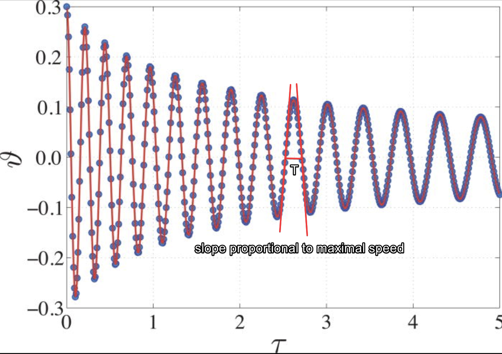
For a more rigorous proof of adiabatic invariance at the level of first-year graduate student, see (Wells and Siklos 2007). (Henrard 1993) is a good comprehensive review of adiabatic invariance in classical mechanics, and points to the literature on a lot of applications in celestial mechanics, magnetism, and the geometry of phase space plots. In textbooks on classical statistical mechanics, the adiabatic invariance theorem is used to derive many results. (Fernandez-Pineda, Diez de los Rios, and Mengual 1982) gives some worked-out examples, such as the ideal gas and the photon gas.
Old quantum mechanics
Sommerfeld, in the new edition of his book [Atomic structure and spectral lines], has introduced the adiabatic hypothesis through a couple of very elegant changes and footnotes, in such a way that my participation in that can rather appear reduced to — a plagiarism. Lorentz and Einstein have founded the subject, I have given it a name and Burgers has put everything in order. I was first very, very depressed. I know that I have never discovered anything, and quite surely never will discover anything, that I can love so fervently as this line of thought which I found out with so large joy.
Ehrenfest’s letter to Bohr, 8 May 1922. Emphasis in original. Quoted in (Navarro and Pérez 2006)
The adiabatic hypothesis
There are two ways to interpret the word “adiabatic”. In thermodynamics, “adiabatic” means “no exchange of heat”. In mechanics, “adiabatic” means “gradual”.19 It is a winding story of how one word “adiabatic” came to mean two things that fortuitously are connected after all, the details of which are given in (Jammer 1966, chap. 3; Laidler 1994). The story is almost as interesting as that of the word “entropy”, which also has two meanings that are fortuitously connected after all.
19 Because “adiabatic” has two meanings in English, in Chinese, it also has two different translations based on the two meanings. There is 绝热, which means “no exchange of heat”, and 浸渐, which means “gradually, like moisture soaking into something”.
Rankine first coined the term “adiabatic” in 1858, to denote a process in which no heat is exchanged with the surroundings. Later, Boltzmann and Clausius tried to explain the second law of thermodynamics mechanically, by using purely mechanical models of the microscopic world. In this sense, they defined an “adiabatic” mechanical process to be one where a certain variable is slowly changed (for example, if we have a box of little bouncing balls, and we slowly move its walls), because an adiabatic thermodynamic process in their view is actually an adiabatic mechanical process.
“Adiabatic motion” in mechanics was introduced by Helmholtz and Hertz, to denote mechanical processes where external forces act upon a system, but only on a few parameters, with no action on the underlying details. For example, think back to the case of bouncing balls in a box. The external force only moves the walls of the box on average, with no attempt to move the walls to manipulate the precise location of the ball. They used the thermodynamic terminology, because the work done on the system during an adiabatic motion results exclusively in changes in its energy. (Jammer 1966, chap. 3)
In 1900, Pyotr Lebedev experimentally proved that radiation pressure exists, and follows Maxwell’s theory of electromagnetism. Inspired by this, Lord Rayleigh (Rayleigh 1902) generalized the concept of radiation pressure to all kinds of vibrations, starting with the humble pendulum. Since his goal was to understand what happens when you adiabatically compress a photon gas, that is, Wien’s displacement law,20 he studied the effect of adiabatic motion on some simple mechanical systems undergoing wave motion, such as the Lorentz pendulum, a vibrating cord, a piston of gas with a standing acoustic ave, etc.
20 Since he didn’t actually know what a photon was, it might be better to say that he was studying what would happen when you compress a hot chamber of light. Though Wien’s displacement law is nowadays proved straight from quantum mechanics, back when ien discovered it in 1893, he used a thermodynamic argument using the adiabatic compression of a photon gas. For a brief presentation of how Rayleigh did it, see (Ter Haar 1966).
Like Lord Kelvin, Paul Ehrenfest was also trying to explain Wien’s displacement law. He was puzzled by the fact that while Wien’s displacement law was derived without the quantum hypothesis, yet somehow, it remains true. Suppose we start with a box of light, then it follows a certain black body radiation, which can only be derived by the quantum hypothesis. Now suppose we adiabatically compress the box of light. Though the compression process is studied classically, without the quantum hypothesis, the final state of the light is still the black body radiation. So, it seems that if we start with a system following the quantum hypothesis, then any adiabatic classical process would give us a system that still follows the quantum hypothesis. This is his adiabatic hypothesis, for which he is famous.
During the 1910s, Ehrenfest published a series of papers to subsume the many ad-hoc quantum rules under the framework of the adiabatic hypothesis. His idea is as follows: If, in a periodic system described by classical mechanics (such as an electron orbiting a proton), a certain quantity \(I\) has units of joule-second, and is conserved as it undergoes adiabatic motion, then this quantity should be quantized, and only this quantity can be quantized. Only \(I\) can be quantized, for the reason discussed by Lorentz and Einstein at the Solvay conference.
Further, \(I\) should be quantized, because otherwise, why else should \(I\) be adiabatically conserved? The adiabaticity of \(I\) in the classical world, on the surface, is a shadow of the discreteness of \(I\) in the quantum world, deep down. Because \(I\) is quantized, if we vary the system slowly enough, the system would have no reason to make a big jump from \(I = nh\) to \(I = (n+1)h\). This discreteness in the quantum world traps \(I\) in its starting position, and this is why \(I\) appears adiabatic in the classical world.
Thus, quantized quantities are precisely adiabatic invariants. We can write down \(I = nh\), where \(n \in \mathbb{N}\), and proceed to calculate the properties of the system, such as its energy levels, its absorption and emission spectra, etc.
In short, this is Ehrenfest’s recipe for doing “old quantum mechanics”:
- Find a system that has a conserved quantity \(I\) under adiabatic motion.
- You can do this by solving the equations of motion, then integrate \(\oint pdq\).
- Alternatively, you can start with a harmonic oscillator, and adiabatically deform the system until it becomes the system you want. Ehrenfest called such systems “adiabatically related to the harmonic oscillator” (Jammer 1966, 99).
- Proclaim that \(I = nh\) for some constant \(h\).
- Calculate the properties of the system.
The Bohr–Sommerfeld model
As an example, consider the pinnacle of old quantum theory, the Bohr–Sommerfeld model of the hydrogen atom. First, treat the hydrogen atom as if it is a relativistic solar system, with the electron as a planet, moving at relativistic speeds21 under the inverse-square force \(F \propto \frac{1}{r^2}\). Next, assume that the adiabatic invariant is quantized:
21 Because the electron moves faster closer to the atom than further away, it has more mass close to the atom than further away. This allows the orbit to precess in a way that is not predicted by Newtonian mechanics. Generally, any perturbation of the inverse-square force will cause the orbit to precess. Even special relativity would predict some precession for the perihelion of Mercury, though it predicts a value of \(7''/\text{year}\) only \(1/6\) of the correct value (McDonald 2023; Goldstein, Poole, and Safko 2008, exercise 7.27, page 332). Only general relativity predicts the correct value. Assuming that only special relativity contributes, the perihelion of Mercury would take \(7.5 \times 10^7\) Mercury-years to go around the sun once.
As the electron moves a lot faster than Mercury, it takes much shorter time, but still it takes \(4\times 10^4\) electron-years to go around the nucleus once, as noted in Bohr’s Nobel lecture (Bohr 1923).
\[\int_0^T p_r \,dq_r = n' h\]
where \(q_r\) is the radial position of the electron, \(p_r\) is the momentum conjugate to it, \(n'\) is the “auxiliary quantum number”, and \(T\) is the period of the electron’s orbit. This, when combined with the hypothesis of quantized angular momentum \(mvr = nh\) (here, \(n\) is the “principal quantum number”), would predict the emission spectrum of the hydrogen atom.22
22 Because the equation of motion for the electron separates into a radial component \(q_r, p_r\) and an angular component \(q_\theta, p_\theta\), we can apply the multidimensional adiabatic theorem and find that both \(\int_0^T p_r \,dq_r\) and \(\int_0^T p_\theta \,dq_\theta\) are adiabatic invariants.
Sommerfeld went further, piling epicycles upon epicycles, to explain the fine structure of atomic spectra. All those has been swept away by the new quantum theory like how the new astronomy of Kepler swept away the epicycles of Ptolemy. But the adiabatic hypothesis remains to this day a fruitful meeting point between the classical, the quantum, and the thermodynamic world.
Have some cool pictures, because I like cool pictures.
Selections from (Sommerfeld 1923).
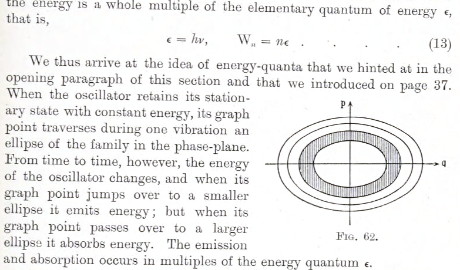
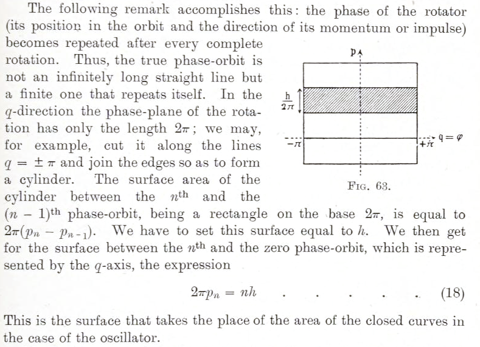
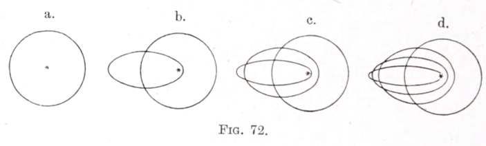
Selections from (Kramers 1923).
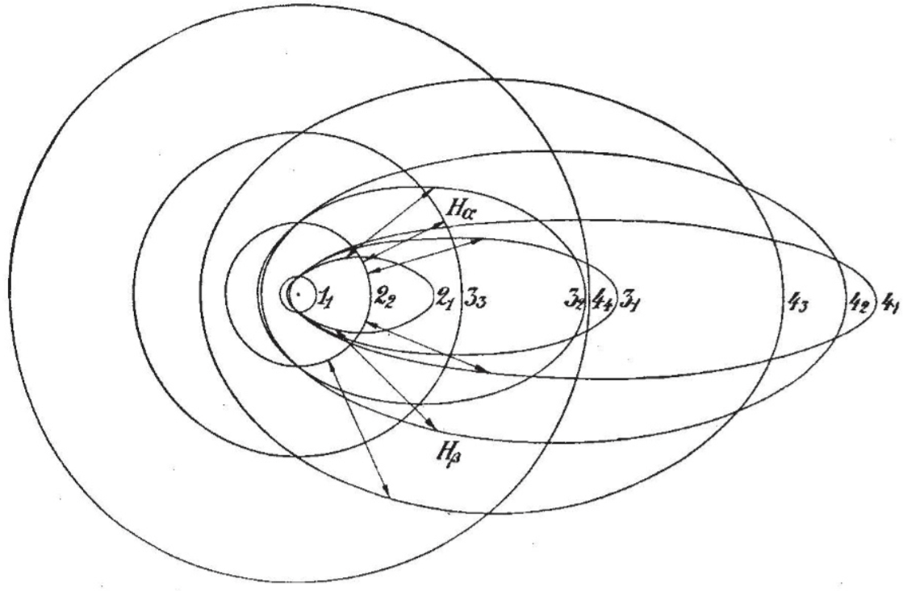
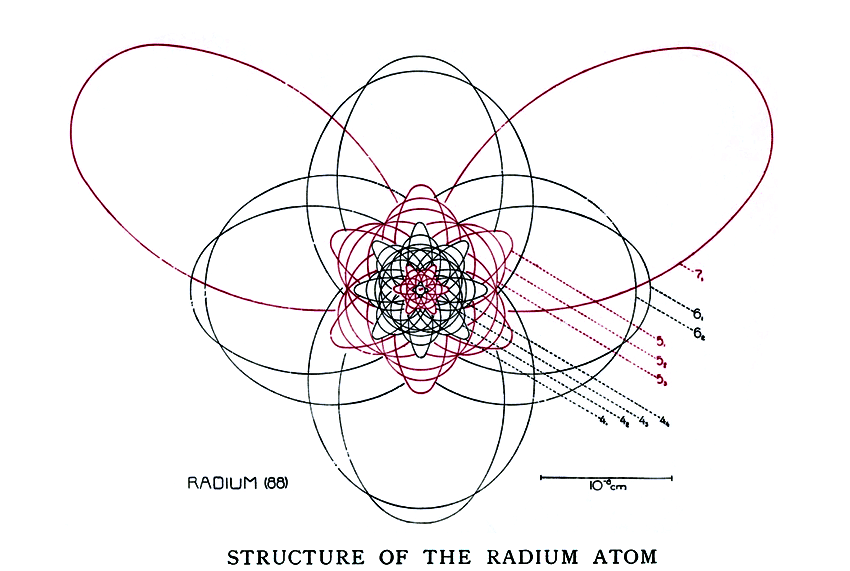
What we are nowadays hearing of the language of spectra is a true “ music of the spheres ” within the atom, chords of integral relationships, an order and harmony that becomes ever more perfect in spite of the manifold variety. The theory of spectral lines will bear the name of Bohr for all time. But yet another name will be permanently associated with it, that of Planck. All integral laws of spectral lines and of atomic theory spring originally from the quantum theory. It is the mysterious organon on which Nature plays her music of the spectra, and according to the rhythm of which she regulates the structure of the atoms and nuclei.
Preface to the first edition of Atomic structure and spectral lines, Arnold Sommerfeld, 1919. (Sommerfeld 1923)
The Einstein—Brillouin–Keller quantization
This topic is quite obscure and hard to find a simple reference for, yet I found it is absolutely necessary to treat this correctly, if only to soothe my mathematical conscience. I wrote it based on (Stone 2005; Duncan and Janssen 2019, chap. 5).
Let’s take a more careful look at the Bohr–Sommerfeld model of a hydrogen atom. The electron orbits a proton, and the equation of motion is spherically symmetric. Therefore, we can write it in spherical coordinates \((r, \theta, \psi)\), where \(r\) is the radius, \(\theta\) is the co-latitude, and \(\psi\) is the longitude. The Bohr–Sommerfeld quantization then states that
\[ \begin{aligned} & \oint p_r d r = n_r h \\ & \oint p_{\theta} d \theta=n_\theta h, \\ & \oint p_\psi d \psi=n_\psi h . \end{aligned} \]
for some positive integers \(n_r, n_\theta, n_\psi\). However, we notice something deeply unsatisfying: How does the atom “know” which way is the sphere pointing? To define the spherical coordinates, we need to define the direction of the north and south pole. The Bohr–Sommerfeld quantization condition is thus creating an artificial direction in space where none should exist. Worse, if we solve the equations, we would find that this artificial direction has physically measurable consequences.
Sommerfeld evaded the difficulty by arguing that as long as there is even a hair of magnetic field \(B\) pointing in some direction \(\hat z\), we can pick \(\hat z\) as the north pole direction, and that since the field strength is nowhere zero, the problem will never occur in practice.
We see the difficulty inherent in the old quantum theory. Suppose we have a hydrogen atom suspended in free space, then the tiniest change in the external magnetic field would create a large (for the atom, at least) change in its north-pole direction. The Stern–Gerlach experiment, performed in 1922, experimentally showed that the external field can determine the direction of \(\hat z\), and thus the quantization of angular momentum. To see something in classical mechanics so jumpy is disconcerting, and certainly disturbed me greatly when I first understood the Stern–Gerlach experiment. In 4 years, Schrödinger would have proposed his equation, Heisenberg his matrix mechanics, and old quantum theory washed away by the new quantum mechanics.
Einstein, in his only paper on the old quantum mechanics,23 elegantly resolved the problem by using the Poincaré–Cartan integral invariant to construct quantization equations that do not depend on our arbitrary choices of coordinate systems.
23 (Einstein 1917), reprinted and translated in (Einstein 1997, vol. 6, pages 434–444).
24 In the jargon of topology, this is a linear function on \(T^d\), the homology group of the torus. Here, \(d\) is the dimension of the torus.
As we saw with Exercise 2, a contractable loop on the torus integrates to zero. Thus, we can attach and detach contractible loops at will, deform the cycle arbitrarily, and still get the same number. That is, the integral is determined by the topology of the cycle, not the exact shape of the cycle.24 This gives us the Einstein quantization:
\[ \oint_{\gamma_i} \left\langle p, dq\right\rangle = n_i h \]
where \(\gamma_1, \dots, \gamma_d\) range over the \(d\) topologically distinct loops around the \(n\)-dimensional torus in phase space, and \(n_1, \dots, n_d\) are positive integers. This was later modified by Brillouin and Keller to take account of singularities in the trajectory, such as a hard wall reflector, giving us the EBK quantization.
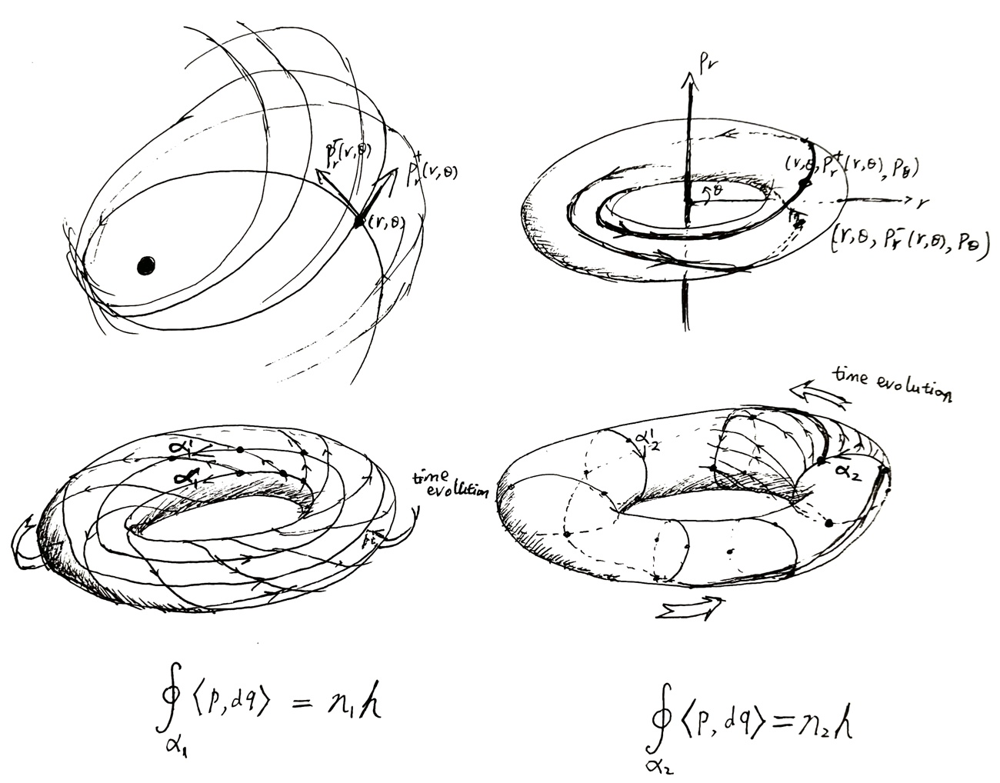
The EBK quantization resembles the Bohr–Sommerfeld quantization condition, but it is quite different. In the Bohr–Sommerfeld quantization condition, the integral \(\oint p_i dq_i\) integrates over a cycle of physically real trajectory in phase space. In EBK quantization, the integral \(\oint_{\gamma_i} \left\langle p, dq\right\rangle\) integrates over a geometric cycle in phase space with no physical reality at all.
Both conditions happen to be the same when we have a 1D oscillator, but that is because the only way to physically go around the torus is the only way to geometrically go around the torus. It is a misleading coincidence.
In general, the physically real trajectories look like a braiding on the torus, and are not even closed cycles. They definitely do not go around the torus exactly once in exactly one direction.
There is only one problem left: What happens when we don’t have a torus? It is all well and good when we can construct a torus in phase space with as many dimensions as possible. However, when we have a classically chaotic system, such as the three-body problem, we cannot have something this simple.
Consider the simplest case of the three-body problem: We put two suns in a circular orbit around each other, and a speck of dust orbiting them. The two suns’ orbit is perfectly predictable, so we consider only the trajectory of the dust. We also assume the dust only moves in the plane of the suns. Thus, the system has only 2 dimensions of configuration, or 4 dimensions of phase.
As the energy of the system is conserved, the motion of the dust is restricted to the constant energy surface \(H(q_1, q_2, p_1 p_2) = E\), which is a 3-dimensional blob within the 4-dimensional phase space. However, in general, this is all we can say about it. The motion of the dust is chaotic, and would densely crisscross over a 3-dimensional subset of the blob.
Without a torus in phase space, we cannot find trajectories around the torus, and so the integral \(\oint_{\gamma}\left\langle p, dq\right\rangle\) is undefined. Einstein presciently pointed this out in his 1916 paper:
If there exist fewer than \(d\) [constants of motion], as is the case, for example, according to Poincaré in the three-body problem, then the \(p_i\) are not expressible by the \(q_i\) and the quantum condition of Sommerfeld-Epstein fails also in the slightly generalized form that has been given here.
This failure of the EBK quantization on classically chaotic systems was forgotten for many years, but eventually rediscovered.25 When it did, it became a seed of quantum chaos, which I hope to explain clearly some day. In the mean time, I leave you with some beautiful pictures of quantum chaos instead.
25 See (Stone 2005) for a brief history and more cool pictures. It was written in 2005, the “Einstein Year”, the 100th anniversary of Einstein’s annus mirabilis.
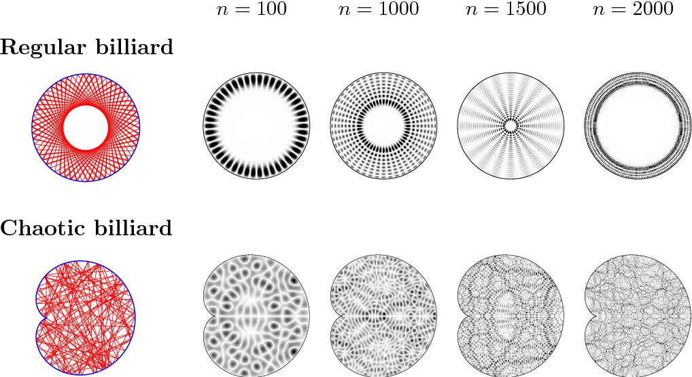